[[HEADER: Abstract—]]
摘要—
💡 上次提示:
einforcement learning (RL), with its ability to explore and optimize policies in complex, dynamic decisionmaking tasks, has emerged as a promising approach to addressing motion planning (MoP) challenges in autonomous driving (AD). Despite rapid advancements in RL and AD, a systematic description and interpretation of the RL design process tailored to diverse driving tasks remains underdeveloped.
This survey provides a comprehensive review of RL-based MoP for AD, focusing on lessons from task-specific perspectives. We first outline the fundamentals of RL methodologies, and then survey their applications in MoP, analyzing scenario-specific features and task requirements to shed light on their influence on RL design choices.
基于强化学习（RL）的方法，由于其在复杂动态决策任务中探索和优化策略的能力，已成为解决自主驾驶（AD）领域运动规划（MoP）挑战的有前途的方法之一。尽管在RL和AD领域取得了快速进展，但针对多样化的驾驶任务定制化地描述和解释RL设计过程仍然不够完善。
本综述提供了一种全面回顾基于RL的MoP方法以应对AD挑战的方式，重点关注从特定任务视角获得的经验教训。我们首先概述了RL方法的基本原理，然后探讨其在MoP中的应用，分析具体场景的特点及任务需求，从而阐明这些因素对RL设计选择的影响。
💡 上次提示:
Building on this analysis, we summarize key design experiences, extract insights from various driving task applications, and provide guidance for future implementations. Additionally, we examine the frontier challenges in RL-based MoP, review recent efforts to addresse these challenges, and propose strategies for overcoming unresolved issues.
Index Terms—Reinforcement learning, autonomous driving, motion planning, survey.
基于上述分析，我们总结了关键设计经验，从各种驾驶任务应用中提取见解，并为未来的实施提供指导。此外，我们还考察了基于强化学习的运动规划（MoP）领域的前沿挑战，回顾了近期为应对这些挑战所做出的努力，并提出了克服未解决问题的策略。
关键词—强化学习，自主驾驶，运动规划，综述。
💡 上次提示:
[[HEADER: I. INTRODUCTION]]
I. 引言
💡 上次提示:
Resource Figure_1
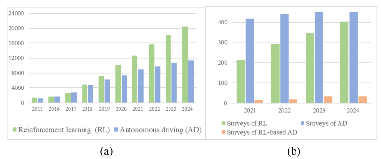Fig. 1. Search result of Web of Science until 2024: (a) topic search for RL and AD. (b) topic search for surveys for RL, AD, and RL-based AD.
Fig. 1. Web of Science搜索结果至2024：(a) 对RL和AD的主题搜索。(b) 对RL、AD及基于RL的AD的综述主题搜索。
EINFORCEMENT learning (RL) is a machine learning paradigm that focuses on solving sequential decisionmaking and control challenges [1]. In contrast to supervised learning such as imitation learning (IL) [2]), where the agent directly learns a policy with labels of expert data, an RL agent generates its policy by interacting with the environment, and evaluating and iterating itself by statistically maximizing long-term rewards with its trial-and-error property [3].
The RL agent still learns a mapping between inputs and outputs rather than hidden patterns within the data. With RL methods surpassing human world champions in Go [4], Starcraft II [5], automobile racing [6], and drone racing [7], RL has been recognized as a promising approach for AD, especially for motion planning (MoP) [8], [9].
According to the search results from Web of Science (WOS), the number of research papers on the RL and AD topics has surged over the past decade, as shown in Fig. 1. In particular, owing to the complexity of interaction with the environment in different MoP problems [10], [11], RL has proven highly applicable to these tasks [12]. Recently, research on RL technologies applied to MoP has explored in a variety of driving tasks [13].
Most existing surveys focus on the overall technology of AD, or focus on specific functions such as localization, perception (especially object detection), communication, etc., with very few studies on MoP [14]. There are even fewer surveys summarizing RL-based MoP studies. Several references such as [3], [15] have reviewed some studies and applications of RL-based MoP for AD.
根据Web of Science (WOS)的搜索结果，过去十年关于强化学习（RL）和自动驾驶（AD）主题的研究论文数量急剧增加，如图1所示。特别是由于在不同制造过程问题（MoP）中与环境交互的复杂性[10]、[11]，强化学习已被证明对这些任务具有高度适用性[12]。最近，关于应用于MoP的RL技术的研究已经探索了各种驾驶任务[13]。
现有的大多数综述主要关注AD的整体技术，或者专注于特定功能如定位、感知（尤其是目标检测）、通信等，而很少有研究涉及MoP[14]。甚至几乎没有综述总结基于强化学习的MoP研究。一些参考文献如[3]、[15]对基于RL的MoP在AD中的某些研究和应用进行了回顾。
💡 上次提示:
Nevertheless, most of them focus on the perspective of categorizing RL methodologies, and do not clearly define the connection between RL and the specific driving tasks. Some surveys such as [16], [17] have tried to categorize and discuss RL-based MoP research according to driving scenarios, and provide insight into some state-of-theart RL research from a problem-driven perspective. However, their summarization is incomplete, ignoring some rare driving tasks, such as parking and racing.
Most importantly, they do not provide a detailed introduction to the scenario characteristics and task requirements corresponding to AD tasks, as well as their impact on RL model design. Moreover, the limitations and challenges identified by most surveys, such as driving safety, policy robustness, sample efficiency, and scenario generalization, have been further explored in recent years.
Despite the existence of several summaries of advanced theoretical approaches to RL [18], [19], [20], to the best of our knowledge, there is no review that comprehensively summarizes the application of these state-of-the-art technologies to the field of MoP for AD. With the rapid development of RL-based AD technologies in both academia and industry, holistic and thorough review of recent investigations is needed.
This article analyzes and summarizes recent advanced work from a comprehensive driving task perspective (although owing to space limitations, we are unable to include some impressive RL-based MoP papers in this article). Our study aims to systematically answer the following questions: How can RL be employed to formulate an MoP model for specific AD tasks? What are the generic design paradigms and customized adaptations of RL for various driving tasks?
What are the advances addressing the current challenges for RL-based MoP? The contributions of this article include the following:
• We outline the fundamentals of RL methodologies, and then focus on their applications in MoP for AD, where various driving tasks are systematically characterized to shed light on their influence on RL design.
• We summarize several developments in RL-based MoP for AD, extract insights from various driving task applications, and provide guidance for future implementations.
• The current challenges in RL applications to MoP for AD are discussed, and beyond pointing out challenges and future directions, a comprehensive review of recent exploratory efforts to address these issues with advanced methods is undertaken. The structure of this article is shown in Fig. 2, and the remainder of it is organized as follows: Section II briefly introduces the basics of RL and RL-based MoP. Section III reviews research on RL-based MoP from a driving task perspective.
针对基于强化学习（RL）的移动物体规划（MoP）所面临的当前挑战，有哪些进展？本文的研究贡献包括以下几点：
• 我们概述了RL方法的基本原理，并重点介绍了其在自动驾驶（AD）中的应用，在各种驾驶任务中系统地进行分类以揭示它们对RL设计的影响。
• 总结了几种基于RL的MoP在AD中的发展，从不同的驾驶任务应用中提炼出见解，并为未来的实现提供指导。
• 讨论了将RL应用于AD中的MoP所面临的当前挑战，并不仅指出这些挑战和未来方向，还全面回顾了最近采用先进方法解决这些问题的努力。本文结构如图2所示，其余部分组织如下：第二节简要介绍了RL及其基于RL的MoP的基本概念；第三节从驾驶任务的角度回顾了基于RL的MoP的研究。
💡 上次提示:
Section IV discusses the lessons learned from RL-based MoP design for various driving tasks, and offers experiences and insights. Section V analyzes the current challenges in RL-based MoP and details exploratory efforts to apply advanced RL theories to address them, exploring outlooks and opportunities. Section VI concludes this article.
第四节讨论了基于强化学习（RL）的运动规划（MoP）设计在各种驾驶任务中的经验教训，并提供了相关经验和见解。第五节分析了基于强化学习的运动规划当前面临的挑战，并详细探讨了如何应用先进的RL理论来应对这些挑战，探索了未来的研究方向和机遇。第六节总结了本文的主要内容。
💡 上次提示:
[[HEADER: II. BASICS OF RL AND RL-BASED MOP FOR AD]]
II. 强化学习及其在AD中的多目标优化基础
💡 上次提示:
[[HEADER: A. Basic Theory and Algorithm of Reinforcement Learning]]
A. 强化学习的基本理论与算法
💡 上次提示:
Resource Figure_2
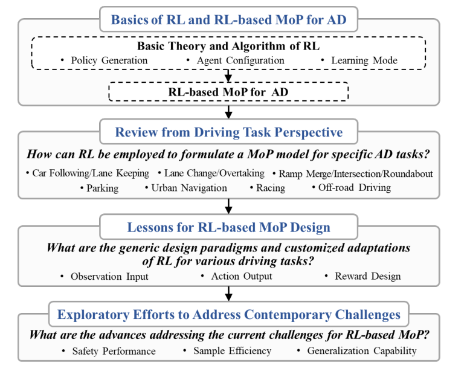Fig. 2. The schematic of the survey structure of RL-based MoP for AD.
Fig. 2. 基于RL的方法论框架图，用于AD治疗。
Equation_1
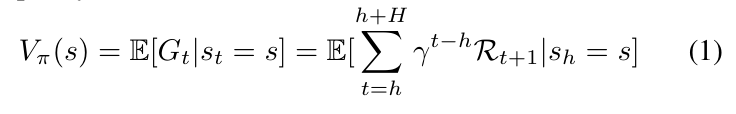Equation_2
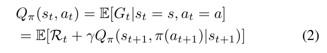Resource Figure_3
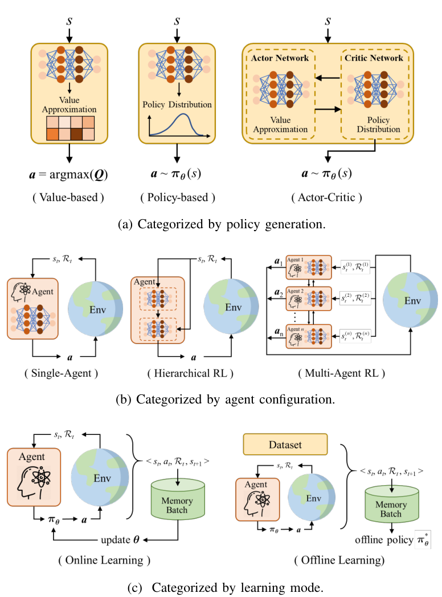Fig. 3. RL methods with different categorization.
Fig. 3. 不同分类下的RL方法。
Perception, action, and goal are the three key elements of RL: After perceiving information about the environment state, the RL agent can take actions to influence the environment to achieve its goal. In RL, the agent is not concerned with how to act based on expert data, rather, iterates the policy by evaluating action performance through reward signals and improves its policy to achieve its goal.
In general, the RL model can be formulated as a Markov Decision Process (MDP) [21] satisfying the Markov property: The future states depend only on the current state. Specifically, an MDP problem can be defined by a tuple < S, A, R, T , γ >:
• S and A denote the state and action spaces, respectively, i.e. st ∈S and at ∈A.
• T : S × A →[0, 1], T (st+1, st, at) is the transition function from a current state-action pair (st, at) to a new state st+1 at the next time step with probability
P(st+1 | st, at), which is referred to as the environmental dynamics (system dynamics).
感知、动作和目标是强化学习（RL）的三个关键要素：在接收到关于环境状态的信息后，RL代理可以采取行动来影响环境以实现其目标。在RL中，代理并不关心如何基于专家数据进行行为，而是通过奖励信号评估行为表现并迭代策略，从而改进其策略以达成目标。
一般来说，RL模型可以形式化为满足马尔可夫性质的马尔可夫决策过程（MDP）[21]：未来的状态仅依赖于当前的状态。具体而言，一个MDP问题可以通过元组 < S, A, R, T , γ > 来定义：
- S 和 A 分别表示状态空间和动作空间，即 st ∈S 且 at ∈A。
- T : S × A →[0, 1]，T (st+1, st, at) 是从当前的状态-动作对 (st, at) 到下一个时间步的新状态 st+1 的转移函数，其概率为 P(st+1 | st, at)，这被称为环境动力学（系统动力学）。
💡 上次提示:
• R : S × A × S →R is the reward function used to evaluate the agent’s performance.
• γ ∈[0, 1] denotes the discount factor for the present value of the future reward. To describe not fully observable states, the MDP problem can be extended to a partially observable MDP (POMDP) [22]. For POMDPs, an observation space O, an observation function Ω(at, st+1, ot+1) : S → O, and the probability P(ot+1|at, st+1) of observing ot+1 after the agent executed at and reached st+1.
The policy π : (at|st), maps the observed state st to a probability of an action at, which represents the driving maneuver in the AD driving task. The set of all possible policies is expressed by Π. The sequence {s0, a0, s1, a1, · · · , st, at, · · · } generated by the RL agent with the policy π is called trajectory or rollout.
• R : S × A × S → R 是用于评估智能体表现的奖励函数。
• γ ∈ [0, 1] 表示未来奖励现值的折扣因子。为了描述不可完全观测的状态，MDP问题可以扩展为部分可观测马尔可夫决策过程（POMDP）[[LINK: Table_2|Table2]]。对于 POMDPs，存在一个观察空间 O、一个观察函数 Ω(at, st+1, ot+1) : S → O 和在执行 at 并到达 st+1 后观测到 ot+1 的概率 P(ot+1|at, st+1)。
策略 π : (at|st) 将观测状态 st 映射到动作 at 的概率，这代表了AD驾驶任务中的驾驶行为。所有可能的策略集合表示为 Π。使用策略 π 生成的序列 {s0, a0, s1, a1, · · · , st, at, · · · } 被称为轨迹或展开。
💡 上次提示: MDP (POMDP) [22]. 其中[22]是参考文献序号不应该改动其格式，更不能莫名出现表格引用
The solution objective of the MDP is to find the optimal policy π∗resulting in the highest expected discounted return over all possible trajectories, where h is the current timestep and H is the finite horizon (for an infinite horizon H is set to ∞). Furthermore, the expectation of return following the policy π from a state s is defined as the value-function:
where Gt means the total return for the current state st. Similarly, the action-value function, i.e., “Q-value function” is defined as:
According to whether the state transition probability T is known, RL methods can be classified into model-based and model-free. Typical model-based RL methods can utilize dynamic programming (DP) [23] to find the optimal policy with known environment dynamics. However, since the state transition function in many engineering applications (e.g.,
MDP的目标是找到最优策略π，使得在所有可能轨迹上的期望折现回报最高。其中h表示当前时间步，H表示有限的展望期（对于无限展望期，H设为∞）。此外，从状态s出发遵循策略π后的回报期望定义为价值函数：
\[ V^\pi(s) = \mathbb{E}_\pi \left[ G_t \mid S_t = s \right] \]
其中Gt表示当前状态st的总回报。同样地，“Q值函数”即动作价值函数定义如下：
\[ Q^\pi(s, a) = \mathbb{E}_\pi \left[ G_t \mid S_t = s, A_t = a \right] \]
根据状态转移概率T是否已知，RL方法可以分为基于模型的方法和无模型的方法。典型的基于模型的RL方法可以通过动态规划（DP）[23]来找到已知环境动力学情况下的最优策略。然而，在许多工程应用中（例如），由于状态转移函数未知，通常采用无模型的方法。
💡 上次提示:
MoP for AD) is often unclear, it is a challenge to model the interaction between the agent and environment, limiting the application of model-based RL methods [24]. In contrast, model-free RL implicitly construct environment dynamics during learning, which are typically solved by Monte Carlo methods [25] and temporal difference (TD) methods [26]. When the states of the environment and the agent are highdimensional or even infinite, it is impractical to store all Qvalues.
One widely used method is to use deep neural networks (DNNs) as a nonlinear Q-value function approximator over high-dimensional state spaces. Subsequently, πθ is denoted as the policy parameterized by the network parameter θ, which aims to fit arbitrarily complex policy distribution functions.
In this article, RL algorithms are categorized by the difference in policy generation, agent configuration, and learning mode, as shown in Fig. 3, and we focus on model-free methods that are more applicable to MoP for AD. 1) Policy generation a) Value-based Methods: These methods explicitly identify an optimal value function and learn the optimal policy from the value function. Q-learning is one of the most classic RL models.
The optimal policy π∗of Q-learning aims to maximize the Q-value and can be defined as:
在本文中，RL算法根据策略生成、代理配置和学习模式的不同进行分类，如图3所示，我们重点关注更适用于AD的MoP的方法——即模型自由方法。1) 策略生成 a) 基于值的方法：这些方法明确地识别出最优的价值函数，并从价值函数中学习最优策略。Q-learning是最经典的RL模型之一。
Q-learning的目标策略π∗旨在最大化Q值，可以定义为：
💡 上次提示:
[[HEADER: 1) Policy generation]]
1) 政策生成
💡 上次提示:
Equation_3
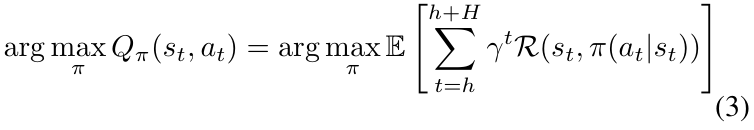Equation_4
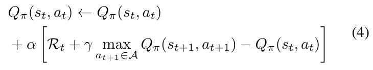Equation_5
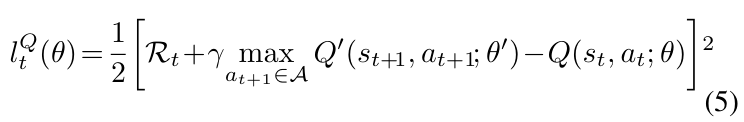Equation_6
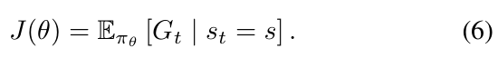Equation_7
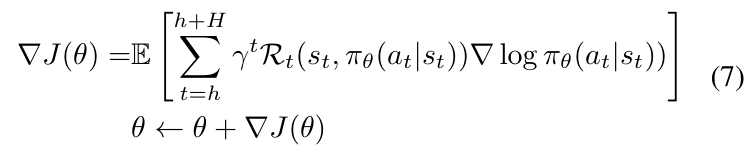Equation_8
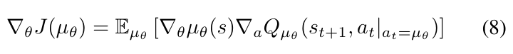The RL agent can update their policies by estimating Qvalue as follows: Qπ(st, at) ←Qπ(st, at)
where α is the learning rate. With the use of DNNs, Qlearning has evolved into far-reaching algorithms represented by Deep Q-Network (DQN) [27], Double DQN (DDQN) [28], dueling DQN [29], and Dueling Double DQN (D3QN) [30]. In practice, the outstanding aspects of DQN are the experience replay and the design of the target network. The former breaks the correlation between experience samples and improves data utilization efficiency.
The latter introduces a target network with parameters updated periodically during Q-network updates, thereby alleviating instability from rapid fluctuations in the Q-network. The loss function of the Q-network in the DQN can be expressed as:
RL智能体可以通过估计Q值来更新其策略：\[ Q_{\pi}(s_t, a_t) \leftarrow Q_{\pi}(s_t, a_t) + \alpha [r_{t+1} + \gamma \max_{a'} Q_{\pi}(s_{t+1}, a') - Q_{\pi}(s_t, a_t)] \]
其中，\(\alpha\) 是学习率。借助深度神经网络（DNN），Q学习已经发展成为诸如深度Q网络（DQN）[27]、双重DQN（DDQN）[28]、对分DQN（dueling DQN）[29] 和 对分双重DQN（D3QN）[30] 等深远的算法。在实际应用中，DQN 的突出之处在于经验回放和目标网络的设计。前者打破了经验样本之间的相关性，提高了数据利用效率。
后者引入了一个参数定期更新的目标网络，在Q网络更新时缓解了由于Q网络快速波动带来的不稳定性。DQN 中Q网络的损失函数可以表示为：\[ L = \mathbb{E}_{(s_t, a_t, r_{t+1}, s_{t+1}) \sim D} \left[ (r_{t+1} + \gamma \max_{a'} Q_{\pi}(s_{t+1}, a') - Q_{\pi}(s_t, a_t))^2 \right] \]
💡 上次提示:
(5) where Q′(·; θ′) is the target network. Furthermore, the DDQN implements action selection and value evaluation with different Q networks, which reduces overestimation bias. The dueling DQN models the value function separately from the advantage function to improve the stability of the strategy. D3QN combines the techniques underlying the three algorithms above to obtain a more advanced value-based approach.
b) Policy-based Methods: Unlike value-based methods that indirectly obtain the policy by the optimal value function, policy-based methods directly iterate the parameters of the differentiable policy function. Such policy-based methods are more suitable for continuous control problems with infinite action sets. Specifically, the objective function for directly optimizing a stochastic policy function πθ is:
Policy gradient methods [25] use gradient descent to estimate the policy parameters that maximize the expected reward:
(5) 其中 \( Q'(\cdot; \theta') \) 是目标网络。此外，DDQN 使用不同的 Q 网络进行动作选择和价值评估，从而减少了过度估计偏差。分路 DQN 将价值函数与优势函数分开建模，以提高策略的稳定性。D3QN 结合了上述三种算法的技术，获得更先进的基于值的方法。
b) 基于策略的方法：与通过最优价值函数间接获取策略的价值基方法不同，基于策略的方法直接迭代可微策略函数的参数。这类基于策略的方法更适合无限动作集的连续控制问题。具体而言，直接优化随机策略函数 \( \pi_\theta \) 的目标函数为：
策略梯度方法 [25] 使用梯度下降估计使期望奖励最大化的策略参数：
💡 上次提示:
The value function still needs to be computed via the policy-based approach to update the policy. The REINFORCE algorithm [31] uses the Monte Carlo method to estimate Qπ(st, at), but the estimation results exhibit large variance. In addition, the advantage function Aπ(st, at) = Qπ(st, at)− Vπ(st, at) [32] can be utilized to replace Qπ(st, at) to emphasize better actions.
Note that policy-based methods can also use a deterministic policy (determining an action based on the state s, i.e. a = µθ(s), which can be more efficient), rather than just a stochastic policy (selecting an action from a probability distribution, a ∼πθ(·|s)). In this case, the gradient of the objective function can be expressed as:
仍然需要通过基于策略的方法计算价值函数来更新策略。REINFORCE算法[[LINK: Eq. 3|Eq. 3]]使用蒙特卡洛方法估计Qπ(st, at)，但其估计结果表现出较大的方差。此外，可以利用优势函数Aπ(st, at) = Qπ(st, at)− Vπ(st, at)[[LINK: Eq. 4|Eq. 4]]来替代Qπ(st, at)，以强调更好的行动。
需要注意的是，基于策略的方法也可以使用确定性策略（根据状态s确定一个动作，即a = µθ(s)，这可能更有效），而不仅仅是随机策略（从概率分布中选择一个动作，a ∼πθ(·|s)）。在这种情况下，目标函数的梯度可以表示为：
💡 上次提示:
The deterministic policy focuses only on exploitation during training and not on exploration. Therefore, the Deterministic Policy Gradient algorithm (DPG) [33] utilizes an off-policy approach to optimize the deterministic policy by sampling from the stochastic policy to ensure sufficient exploration.
c) Actor-Critic Methods: Actor-Critic methods are a special type of policy-based method that integrates techniques from value-based methods, where the actor is the policy function πθ generating actions to obtain the maximum return, and the critic is the value function Vπθ that estimates the actions. This coupled structure integrates the flexibility of policy optimization and the stability of value estimation.
确定性策略仅在训练过程中关注利用，而不进行探索。因此，确定性策略梯度算法（DPG）[33] 采用离策策略方法通过从随机策略中采样来优化确定性策略，从而确保足够的探索。
c) 行为-批评方法：行为-批评方法是一种特殊的基于策略的方法，它结合了基于值的方法的技术。其中，行为是生成动作以获得最大回报的策略函数πθ，而批评则是估计动作的价值函数Vπθ。这种耦合结构将策略优化的灵活性与价值估计的稳定性相结合。
💡 上次提示:
The Deep Deterministic Policy Gradient (DDPG) [34], Proximal Policy Optimization (PPO) [35], and Soft Actor-Critic (SAC) [36] algorithms are typical algorithms that utilize the actor-critic framework. In particular, the SAC algorithm maximizes the entropy of the actions while maximizing the expected return, thus encouraging exploration to obtain better performance. This has made it a popular paradigm in recent years [37].
2) Agent Configuration In a single agent configuration, all interactions with the environment occur through a single agent. Specially, hierarchical RL (HRL) leverages hierarchical abstraction techniques [38] to decomposes an agent into multiple components, simplifying complex tasks by breaking them into subtasks learned by subagents. Not all subagents interact with the environment;
Deep Deterministic Policy Gradient（DDPG）[34]、Proximal Policy Optimization（PPO）[35] 和 Soft Actor-Critic（SAC）[36] 算法是利用演员-评论家框架的典型算法。特别是，SAC 算法在最大化动作的熵的同时最大化期望回报，从而鼓励探索以获得更好的性能。这使其成为近年来流行的范式之一 [37]。
2) 代理配置
在一个单代理配置中，所有与环境的交互都是通过单一代理进行的。特别地，层次化强化学习（HRL）利用分层抽象技术 [38] 将一个代理分解为多个组件，通过将复杂任务分解成由子代理学习的子任务来简化这些任务。并非所有的子代理都会与环境互动；
💡 上次提示:
typically, the actions from high-level subagents are concatenated into the state space of low-level subagents to provide context and guidance [8] while low-level subagents can control the entire agent. HRL is grounded in Semi MDP (SMDP), which includes the option selection policy πO(ot|st) and the option internal policy πo(at|st).
The high-level agent selects an option ot, and then the low-level agent executes the policy πo(at|st) corresponding to ot, continuing until the option is interrupted [39]. Depending on whether the policies of the high-level and low-level agents are trained synchronously, HRL can be categorized into synchronous and asynchronous architectures.
Methods with synchronous architectures are usually composed of a high-level policy providing coarsegrained subgoals, and a low-level policy to achieve finegrained control [40]. Asynchronous HRL pre-trains multiple low-level policies for different tasks and trains the high-level policy to invoke them appropriately [41]. Multi-Agent RL (MARL) enables multiple agents to independently interact with the shared environment.
Each agent has its own task, but its observations and rewards are influenced by the joint actions of all agents. Meanwhile, a single agent’s long-term optimization objective also impacts the policy learning of other agents.
Given the differences in observations among agents, the interaction process between agents and the environment is typically described by Markov Game (MG) [42], which is defined by an extension tuple < S, N, A(i)i=1∼N, R(i)i=1∼N, T , γ, Ω, O(i)i=1∼N >, where A(i)i=1∼N is the action sets for N agents, R(i)i=1∼N is the reward set and T : S×A(1)×· · ·×A(i)×· · ·×A(N) →[0, 1] is the transition function. Each agent receives a local observation O(i) by Ω(S, i).
Relationships between agents can be categorized as coop-
[[HEADER: p p 2) Agent Configurationi]]
p p 2) Agent Configuration
💡 上次提示:
erative, competitive, or mixed [43]. Additionally, the training process and action execution in MARL systems can generally be classified into two paradigms: centralized and decentralized. However, centralized execution requires real-time communication and a shared policy among all agents, which is difficult to implement in real-world systems [44].
Therefore, researchers often use two main architectures: i) Centralized Training Decentralized Execution (CTDE): During training, a central critic controls the global perspective and updates the policies of all agents based on their states and actions. ii) Decentralized Training Decentralized Execution (DTDE): Each agent is trained and operated independently, without the need to access global information.
此外，多智能体强化学习（MARL）系统中的训练过程和动作执行通常可以归类为两种范式：集中式和去中心化。然而，集中式执行需要实时通信并在所有代理之间共享策略，在实际系统中很难实现[44]。
因此，研究人员通常使用两种主要架构：i) 集中式训练去中心化执行（CTDE）：在训练过程中，中央批评家控制全局视角，并基于各智能体的状态和动作更新所有智能体的策略。ii) 去中心化训练去中心化执行（DTDE）：每个智能体独立进行训练和操作，无需访问全局信息。
💡 上次提示:
However, as the number of agents increases, the state space grows exponentially, making it challenging and slow to train a MARL system [45]. 3) Learning Mode Online RL allows the agent to freely interact with the environment and thus collect experience. The RL agent is required to collect sample data (trial-and-error experience) by itself in the training environment and relies on these data to update the policy. This allows the RL agent to discover an unknown optimal policy.
However, online RL usually suffers from sample inefficiency in some tasks and places high demands on the fidelity of the training environment. Offline RL is a framework dedicated to policy optimization from static, previously collected datasets, and it capitalizes on historical interaction data to derive optimal policy. In contrast to online RL, Offline RL relies solely on a pre-established dataset D, thereby eliminating the need for ongoing exploration while mitigating associated risks.
然而，随着代理数量的增加，状态空间呈指数级增长，使得训练MARL系统变得既具有挑战性又耗时[45]。3）在线强化学习（Online RL）允许智能体自由地与环境交互，从而收集经验数据。在训练环境中，RL智能体需要通过自身收集样本数据（试错经验），并依赖这些数据来更新策略。这使得RL智能体能够发现未知的最优策略。
然而，在线RL通常在某些任务中会遭受样本效率低下的问题，并且对训练环境的真实性提出了较高的要求。离线强化学习是一种专门从静态、预先收集的数据集中进行策略优化的方法，它利用历史交互数据来推导出最优策略。与在线RL不同，离线RL仅依赖于一个预先建立的数据库D，从而消除了持续探索的需求并减轻了相关风险。
💡 上次提示:
The core objective of offline RL is to minimize the Bellman error:
离线强化学习的核心目标是最小化贝尔曼误差：
💡 上次提示:
[[HEADER: g g 3) Learning Mode]]
g g 学习模式
💡 上次提示:
Equation_9
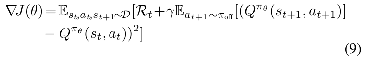Resource Figure_4
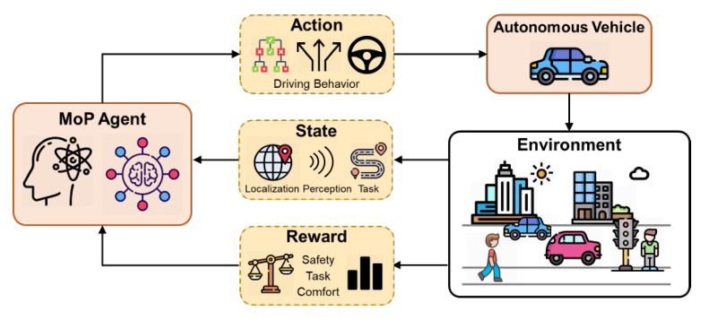Fig. 4. RL algorithm applied to MoP for AD.
Fig. 4. 应用于AD治疗的RL算法。
−Qπθ(st, at))2] (9) Achieving accurate error estimation requires alignment between the evaluation policy and the target policy. However, offline RL inherently aims to discover policies that outperform the original policy, which introduces an unavoidable distributional shift.
This shift occurs when the state-action distribution under the learned policy diverges from that under the original policy, leading to inaccuracies in value estimation due to cumulative biases from sampling and function approximation. To address this distributional shift, Offline RL methods are broadly divided into model-based and model-free methods. Model-based methods leverage learned dynamics models to estimate uncertainty and handle distributional discrepancies.
\[-Q_{\pi_\theta}(s_t, a_t))^2] \tag{9}\) 准确的误差估计需要评估策略与目标策略之间存在对齐。然而，离线强化学习本质上旨在发现超越原始策略的新策略，这不可避免地引入了分布性的变化。
这种变化发生在所学策略下的状态-动作分布与原始策略下的状态-动作分布相异时，导致由于采样和函数近似的累积偏差而引起的价值估计不准确。为应对这种分布性变化，离线强化学习方法大致可分为基于模型的方法和无模型的方法。基于模型的方法利用学到的动力学模型来估算不确定性并处理分布差异。
💡 上次提示:
Prominent examples include MORel [46], MOPO [47], COMBO [48], etc. Model-free methods are further split into explicit and implicit regularization techniques. Explicit regularization methods, such as (Batch-Constrained Q-learning) BCQ [49], (Bootstrapping Error Accumulation Reduction) BEAR [50], Conservative Q-Learning (CQL) [51], etc., impose direct constraints on policy improvement to limit distributional divergence and encourage conservative policy update.
Additionally, the inability to interact with the environment to find more rewarding regions further restricts the performance of offline RL.
[[HEADER: B. RL-based Motion Planning for Autonomous Driving]]
基于强化学习（RL）的自主驾驶运动规划
在自主驾驶中，基于强化学习的方法被用于实现智能的运动规划。这些方法通过与环境交互来学习最优的动作策略，从而优化车辆的行驶路径和行为。本节将介绍几种典型的基于强化学习的运动规划算法，并讨论它们在自主驾驶中的应用。
💡 上次提示:
Resource Figure_5
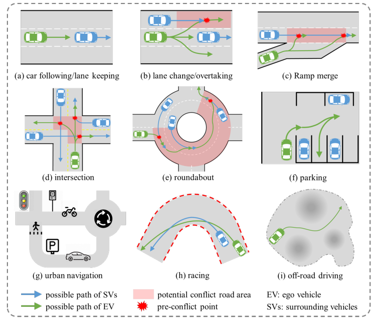Fig. 5. Illustration of RL-based MoP for different driving tasks.
Fig. 5. 基于RL的方法论框架图，适用于不同驾驶任务。
MoP for AD generally refers to the planning process for generating feasible states and control sequences, and it is aimed at achieving safe and efficient movement. It generally requires a given route, or specified task to consider the evolution of the agent and environment dynamics [52]. A schematic of application of RL to MoP for AD is shown in Fig. 4, where the RL agent learns a driving policy from trialand-error data.
The ego vehicle (EV) states and environmental observations usually constitute the state space of the RL agent, and the action output by the RL agent is used for high-level behavioral-type decisions and for direct control of the vehicle maneuvering at a low-level.
For instance, value-based methods are widely used for behavioral planning in MoP [12], [53], [54].The discrete action output of the value-Based RL fits well to supervisory control solutions where the higher level commands by the RL planner are implemented by the legacy motion control systems [55]. Meanwhile, policy-based methods can output the continuous control commands such as the steering angle and acceleration [56], [57], [58].
In recent years, the superior performance of the actor-critic methods has led to the direct learning of vehicle control commands becoming the mainstream direction in the current research [13], [59], [60]. Furthermore, it transpired that HRL motion planning has a similar algorithm architecture to the rule-based modular approach. Different sub-agent can be created to learn the policy for decision-making, trajectory planning, motion control tasks separately.
Some works [61], [62], [63], [64] train the high-level policy to select discrete semantic decision actions, and then utilize a separate low-level policy to directly control the steering angle and acceleration, achieving more precise and flexible motion control while ensuring clear driving objectives. Several studies have used MARL to better model the interaction between vehicles and provide a global perspective on multi-vehicle control.
CTDE methods are commonly used to generate multi-vehicle policies when collaborative tasks are involved, such as maintaining formation, and cooperative lane changing or merging [65], [66]. The core advantage of RL is its theoretical framework, which is focuses on optimizing decisions for long-term returns rather than merely imitating observed behavior.
This capability enables RL to potentially outperform human drivers by uncovering innovative driving policies that extend beyond traditional rule-based models.
[[HEADER: III. A REVIEW FROM THE DRIVING TASK PERSPECTIVE]]
III. 从驾驶任务的角度进行回顾
💡 上次提示:
Most RL MoP studies in the AD field have focused on specific driving tasks, ranging from single tasks such as lane keeping or car following, to multi-task integrated urban navigation, etc. Different driving tasks and their application scenarios usually have their own unique characteristics, which have an enormous impact on the design of RL models. From the driving tasks perspective, this section describes the scenario characteristics and task requirements of different driving tasks.
On this basis, we review the RL-based MoP literature under these tasks (as illustrated in Fig. 5), especially how they design an RL model for AD.
大多数AD领域的RL MoP研究主要集中在特定的驾驶任务上，这些任务范围从单一的任务（如车道保持或跟随前车）到多任务集成的城市导航等。不同的驾驶任务及其应用场景通常具有各自独特的特征，这对RL模型的设计产生了巨大影响。从驾驶任务的角度来看，本节描述了不同驾驶任务的场景特性和任务要求。
在此基础上，我们回顾了这些任务下的基于RL的MoP文献（如图5所示），特别是它们如何设计AD中的RL模型。
💡 上次提示:
[[HEADER: A. Car Following/Lane Keeping]]
A. 车辆跟随/车道保持
💡 上次提示:
Car following (CF) and lane keeping (LK) are the two simple autonomous driving tasks for which early applications of RL approach have been explored. The former task aims to adjust the longitudinal speed to maintain a suitable speed between the EV and the front vehicle (FV), whereas the latter focuses on lateral distance control.
Zhu et al. [67] use the speed of EV, the speed difference from the FV, and the headway distance as the observed states, and then directly control acceleration using DDPG algorithm. Meanwhile, Time to Collision (TTC), Time Headway, and jerk are prioritized in the design of the reward function. Furthermore, Shi et al. [65] add the rear vehicle (RV) information into the state space, and correspondingly considers the safety reward and efficiency reward related to the RV.
Chen et al. [54] further consider the cut-in maneuvers of vehicles from adjacent lanes. Specifically, a target acceleration it selected via DDQN by discretizing a continuous acceleration interval. For the LK task, Kendall et al. [68] control the steering angle and target speed through the DDPG algorithm, with the state space containing the vehicle’s speed and steering angle, as well as monocular camera images from the environment.
Notably, they conducted real-world experiments on a 250 meter section of road, using a modified Renault Twizy vehicle to learn the driving policy online. Moreover, Peng et al. [53] exploit D3QN to control quantized steering angle and acceleration values, promoting the EV follows the road centerline.
Given the target path points, Tian et al. [69] add the lateral distance from the target path to the preview points in the observation space, and use two actor networks to control steering angle and vehicle speed, improving motion accuracy.
Chen等[54]进一步考虑了相邻车道车辆切入的机动行为。具体而言，通过DDQN算法将连续加速度区间离散化后选择目标加速度。对于LK任务，Kendall等[68]利用DDPG算法控制转向角和目标速度，状态空间包含车辆的速度、转向角以及环境中的单目摄像头图像。
值得注意的是，他们在250米长的路段上进行了实地实验，并使用改装后的雷诺Twizy车辆在线学习驾驶策略。此外，Peng等[53]利用D3QN控制量化后的转向角和加速度值，使电动汽车沿道路中心线行驶。
给定目标路径点，Tian等[69]在观测空间中加入了目标路径的横向距离，并使用两个actor网络分别控制转向角和车辆速度，从而提高运动精度。
💡 上次提示:
[[HEADER: B. Lane Change/Overtaking]]
B. 变道/超车
💡 上次提示:
ane change (LC) is a common driving maneuver, and it causes large collision accidents [70]. The purpose of LC is to avoid collision and improve driving efficiency. On structured roads, lane changes are often accompanied by overtaking behavior, i.e. a continuous LC to obtain a faster driving speed. Some researchers divide overtaking maneuvers into three phases: moving to the target passing lane, overtaking another vehicle and then moving back to the original lane [71].
Many studies address such tasks through high-level behavior planning with physical feature inputs, such as continuous feature states of both the EV and surrounding vehicles (SVs) (e.g. surrounding six [72], or eight [12] vehicles, and vehicles within a certain range). Reference [13] use a discrete state grid of the surrounding environment as the input.
一次变道（LC）是一种常见的驾驶操作，会导致严重的碰撞事故[[LINK: 70|Fig.1]]。LC的目的在于避免碰撞并提高驾驶效率。在结构化道路上，变道通常伴随着超车行为，即连续进行变道以获得更高的行驶速度。一些研究者将超车动作分为三个阶段：移动到目标超车道、超越其他车辆以及然后返回原车道[[LINK: 71|Fig.2]]。
许多研究通过使用物理特征输入的高级行为规划来解决此类任务，例如电动汽车（EV）和周围车辆（SVs）的连续特征状态（如周围的六辆[[LINK: 72|Fig.3]]或八辆[[LINK: 12|Fig.4]]车辆，以及一定范围内的车辆）。参考文献[13]使用周围环境的离散状态网格作为输入。
💡 上次提示:
Specifically, references [55], [62], [73], [74] use DQN and its improved algorithms to output three semantic actions—lane change to the left (LCL), lane change to the right (LCR), and lane keeping (LK)—focusing exclusively on lateral behaviors. Among them, reference [74] realizes the first application of RL lanechanging policy in the real world. Based on this, reference [72] further incorporates ac/deceleration in the action space, but do not fundamentally change the output form.
These actions with low control granularity still limit the impact of the RL agent on vehicle’s maneuverability. More recently, an increasing number of studies have used the DDPG, PPO, SAC techniques, etc., to directly control the steering angle and acceleration [13], [60], [75]. Meanwhile, sensor data from LiDAR [76], camera [77], etc., are utilized as observation inputs to achieve direct mapping between perception and control commands.
具体而言，参考文献[55]、[62]、[73]和[74]使用了DQN及其改进算法来输出三种语义动作——左变道（LCL）、右变道（LCR）和保持车道行驶（LK），专注于横向行为。其中，参考文献[74]实现了首个将RL变道策略应用于实际世界的实例。在此基础上，参考文献[72]进一步在动作空间中加入了加/减速操作，但并未从根本上改变输出形式。
这些控制粒度较低的动作仍然限制了RL代理对车辆机动性的影响。近年来，越来越多的研究开始直接使用DDPG、PPO、SAC等技术来控制转向角和加速度[13]、[60]、[75]。同时，LiDAR [76]、摄像头 [77] 等传感器的数据被用作观测输入，以实现感知与控制命令之间的直接映射。
💡 上次提示:
However, even small differences in adjacent inputs may cause significant fluctuations in the control commands output from the policy network. Several studies proposed approaches to generating trajectory targets to indirectly control vehicles, aiming to balance flexibility and stability of lane change/overtaking behavior. For example, Yu et al. [71] select a trajectory from a given discrete trajectory set, which is then sent to a tracker module.
Lu et al. [78] allow the agent to output a target point location as well as a desired vehicle speed, and then optimize the motion sequence for lane change or overtaking. Despite differences in state and action space, most studies are consistent in reward design because of driving task characteristics. The safety reward is essential and is crucial and is typically associated with collision [64], relative distance [55], TTC [67], etc.
然而，即使相邻输入之间存在微小差异也可能导致策略网络输出的控制命令发生显著波动。多项研究提出了生成轨迹目标的方法，以间接控制车辆，旨在平衡变道/超车行为的灵活性和稳定性。例如，Yu等人[[LINK: 71|等]]从给定的离散轨迹集中选择一条轨迹，然后将其发送到跟踪模块。
Lu等人[[LINK: 78|等]]允许代理输出目标点位置以及期望的车辆速度，并随后优化变道或超车的运动序列。尽管状态空间和动作空间存在差异，但由于驾驶任务的特点，大多数研究在奖励设计上保持一致。安全奖励至关重要，通常与碰撞[[LINK: 64|等]]、相对距离[[LINK: 55|等]]、TTC（时间直到碰撞）[[LINK: 67|等]]相关联。
💡 上次提示:
Efficiency is also important and the efficiency reward is often dependent on the vehicle speed [73], the degree of task completion [79], etc. Other components of the reward function can represent comfort related to acceleration and jerk [80], as well as adherence to traffic rules [68], e.g., overtaking on the left side. Furthermore, some studies design segmented rewards according to the overtaking phase to represent the goals of different phases [71].
[[HEADER: C. Ramp Merge/Intersection/Roundabout]]
C. 滑行道合流/交叉口/环岛
💡 上次提示:
) Ramp Merge: the ramp merge task is typically prompted by the driving lanes of the EV and SVs will overlap in the future, resulting in a forced interaction between EV and SVs. The EV needs to adjust its speed before arriving at the lane merge point to find an acceptable gap between the SVs in the target lane. Therefore, the merge task requires the road geometry be used as an extra observation input compared to the lane changing/overtaking tasks [81], [82].
The simplest way is to learn longitudinal control, which ensures the EV drives to the right place at the appropriate time. Notable approaches include learning the ac/deceleration behavior [83] or the speed control command [84]. Some merge tasks allow the EV to complete the merge operation anywhere within a lane between a start and an end merge point [85].
Like lane changing/overtaking, RL solutions for merging can generate steering angle and acceleration commands to directly control the vehicle for more flexible merging maneuvers [59]. The merge task typically introduces an additional reward for reaching the target lane [86], while some studies also consider the driving distance or time to complete the merge [83], [87].
Due to the stronger interactions in merging scenarios, it is also crucial to devote attention to the collaborative behavior of SVs. Several studies employed game theory to model these interaction [88]. Recent research has advanced with MARL framework [89], [90] that provides each agent with strategies for the merging process. This approach learns the interaction characteristics among vehicles and helps them perform actions with a consistent optimal goal.
2) Intersection: Intersection scenario is similar to a ramp merge but with more lane conflicts (turn vs. straight, unsignalized intersections, etc.), complex road structures and road elements, and diverse driving behaviors. This makes intersection one of the most challenging tasks for AD on structured roads [17].
Early approaches focused on controlling vehicle longitudinal behavior through physical feature inputs, by adjusting vehicle acceleration/deceleration [91], or deciding whether to yield or assert the right of way (e.g., wait, pass, yield, take up, give up, etc.) [63], [92], [93], so as to pass through the intersection successfully.
Subsequent research has sought to increase agent flexibility by directly controlling vehicle motion and exploiting the reward function reflecting tracking error, collisions, success rate and passage time [94], [95]. Some studies also incorporate additional rewards for violating traffic rules, such as crossing solid lines or running red lights [96], [97]. Other studies break down various scenarios into sub-tasks for training [98], or employ state machines [99] to manage these multiple tasks.
However, handing semantic constraints for agents in these approaches remains challenging. Due to the increasing number of scenario features and state observation inputs, recent research has attempted extracting feature information directly from raw sensor data. Ren et al. [95] utilize LiDAR point cloud data to extract features
[[HEADER: E. Urban Navigation]]
城市导航
💡 上次提示:
of traffic participants, including vehicles, bicycles, and pedestrians. In [60], multi-view camera images are projected into the bird’s-eye view (BEV) format to capture global scene features. References [97], [100] address sensor occlusion at intersections with roadside sensing information supplement. Similarly, several studies have explored the use of MARL to address driving through intersections.
Antonio et al. [101] iteratively process the observations of the relative positions, speeds, and driving intentions and then individually control the desired speed of each vehicle. Zhao et al. [102] integrate the positional and speed information of each vehicle into a global state feature, and output a joint action based on each vehicle’s desired speed.
3) Roundabout: the roundabout scenario can be viewed as a combination of two T-junctions and a circular multi-lane road. It involves both merge/intersection and lane change/overtaking tasks. At the entrance, the EV is required to perform a merging task similar to that at an intersection, while driving in the roundabout may involve lane changes and moving to the outside lane before exiting.
This combination of multi-scenario features and multi-tasking creates a significant challenge for the MoP system, especially for environment encoding. Zhang et al. [13] divide the state input into an environmental representation (ER) and a task representation (TR). The ER focuses the physical features of eight SVs, and the TR includes relative lane and exit distances.
3）环岛：环岛场景可以视为两个T字路口和一个圆形多车道道路的组合。它涉及合并/交叉口任务以及变道/超车任务。在入口处，EV需要执行类似于交叉口的合并任务；而在环岛上行驶时，则可能涉及到变道并在出口前驶入外侧车道。
这种多种场景特性和多重任务的结合为MoP系统带来了重大挑战，尤其是在环境编码方面。张等人的研究[13]将状态输入分为环境表示（ER）和任务表示（TR）。环境表示（ER）关注八辆周围车辆的物理特征，而任务表示（TR）则包括相对车道距离和出口距离。
💡 上次提示:
The action space represents macro-scale behavior (change lane or not) and mesoscale behaviors of desired acceleration and action time. The authors of [13] use MPC to generate pre-trained trajectories, which are embedded in the actor-critic network to improve the learning efficiency. Additionally, TR vectors are replicated in the environment encoding process to emphasize task success in the later training stages.
动作空间表示宏观行为（换道与否）和期望加速度及行动时间的中观行为。参考文献[13]的作者使用模型预测控制(MPC)生成预训练轨迹，并将这些轨迹嵌入到actor-critic网络中以提高学习效率。此外，在环境编码过程中复制TR向量，以在后续训练阶段强调任务的成功完成。
💡 上次提示:
[[HEADER: D. Parking]]
D. 停车场
💡 上次提示:
A parking scenario involves an unstructured environment in an urban area with partially regular roads and perpendicular, parallel or diagonal parking slots. Parking tasks have been widely studied, and automated parking technologies have been deployed in many produced vehicles. Current research tends to improve parking flexibility, i.e., reduce “D-R” gear shifting in unconventional or narrow parking spaces [103]. RL can be used for finding the optimal parking path.
Most studies directly control the vehicle’s motion during the parking process, and use the position, velocity, and heading angle of the EV as necessary observation inputs, see, e.g., [58], [104]. For the reward design, safety and parking targets are necessary to encourage the EV to reach the target position and heading angle without collision.
Additionally, parking is encouraged to be completed as quickly as possible to enhance efficiency [58], and smooth ness of control commands is promoted to improve comfort [104]. [57] proposes a unified approach capable of coping with perpendicular, parallel or diagonal parking slots, with proximity sensor data as one of the observation inputs.
[[HEADER: F. Racing]]
F. Racing
💡 上次提示:
rban scenario encompasses almost all above driving tasks. Unlike driving tasks in a single scenario, navigation in urban areas requires agents to be able to simultaneously understand the characteristics of different scenarios, including various combinations of merges, intersections, roundabouts, etc. Urban scenarios involve vehicles and pedestrians with different characteristics, and much more semantic traffic elements, which can lead to more complex interactions.
Most related studies use the E2E framework to address this task. For example, Reference [105] deals with a BEV rendering of the scene (map, routing, surrounding objects and previous ego states) that is compressed to a low dim latent space using a Variational Auto-encoders (VAE). The latent state is then fed to an RL controller.
rban场景几乎涵盖了所有上述驾驶任务。与单一场景中的驾驶任务不同，城市区域的导航要求代理能够同时理解不同类型场景的特点，包括各种合并、交叉口、环岛等的不同组合。城市场景涉及具有不同特性的车辆和行人，以及更多的语义交通元素，这可能导致更复杂的交互。
大多数相关研究使用端到端（E2E）框架来解决这一任务。例如，参考文献[105]处理了基于鸟瞰图（BEV）的场景渲染（包括地图、路径规划、周围物体和之前的自我状态），并将这些信息压缩到一个低维潜在空间中，使用变分自编码器（VAE）。然后将潜在状态输入到强化学习控制器中。
💡 上次提示:
Scenario generalization capabilities need to be specifically considered in navigation tasks, as long-tailed/out-ofdistribution scenarios that are difficult to simulate with training data may appear in a city at any time. Anzalone et al. [106] present an E2E RL framework in the CARLA environment, utilizing the entire town map. The training process ranges from simple routing under speed constraints to a more complex phase involving randomized starting points and dynamic pedestrian scenarios.
Zhan et al. [107] utilize transformers to aggregate a collection of variable-sized and unordered traffic participants into a state vector. They implement offline training and decouple it from downstream RL control to prevent overfitting and improve generalizablity. In another study, Jin et al. [108] combine VAE with Generative Adversarial Networks (GAN) to encode input RGB images, thereby reducing the state dimension while also lowering the collision rate in adverse weather conditions.
在导航任务中，需要特别考虑场景泛化能力，因为难以通过训练数据模拟的长尾/分布外（out-of-distribution）场景可能会随时出现在城市中。Anzalone等人[106]提出了一种端到端强化学习框架，在CARLA环境中利用整个城镇地图进行训练。训练过程从在速度约束下的简单路径规划开始，逐步过渡到涉及随机起点和动态行人情景的更复杂阶段。
Zhan等人[107]使用变压器将一组大小可变且无序的交通参与者聚合为一个状态向量。他们实施离线训练，并将其与下游的RL控制分离，以防止过拟合并提高泛化能力。在另一项研究中，Jin等人[108]结合了VAE（变分自编码器）和生成对抗网络（GAN），对输入的RGB图像进行编码，从而降低状态维度并在恶劣天气条件下减少碰撞率。
💡 上次提示:
Hu et al. [109] propose a querybased design and connect perception, prediction and planning nodes in an integrated large parameterized E2E framework that incorporates full-stack driving tasks. These approaches focus more on the generalization capability and comprehensive driving performance of RL-based MoP under different tasks, which usually requires a large network model and large amounts of training data.
acing is a specialized, niche automotive activity, that typically takes place on a fixed, enclosed circuit, requiring intense competition with other vehicles. The object of the racing task is to drive as fast as possible. Similar to lane changing/overtaking, racing requires continually surpassing SVs to improve the position within the vehicle pack, but the lane changing process is not bound by clear lanes and only needs to be within the racetrack.
Hu等[109]提出了一种基于查询的设计方法，并在包含全栈驾驶任务的大型参数化端到端框架中，将感知、预测和规划节点进行整合。这些方法更侧重于基于强化学习（RL）的方法在不同任务下的泛化能力和综合驾驶性能，通常需要较大的网络模型和大量的训练数据。
赛车是一项专门化的汽车活动，通常在固定的封闭赛道上进行，并且通常与其他车辆进行激烈的竞争。比赛的目标是尽可能快地行驶。与变道/超车类似，赛车也需要不断超越其他车辆（SVs）以改善自身的位置，但变道过程不受明确车道的限制，只需在赛道范围内即可。
💡 上次提示:
Additionally, racing places greater emphasis on controlling the vehicle to follow the best route, especially around the corners. The current way of controlling racing cars is dominated by the direct output of their acceleration and steering angle, but some studies also introduce high-level semantic behaviors for collaborative or adversarial purposes [41].
Typically, the observation inputs contain the position, speed, and heading angle of the EV, radar [110] or BEV images [111], and track progression information [6]. Moreover, some studies have further considered information such as tire temperature and engine speed [41] to achieve better control at high speeds.
In particular, the reward function should consider not only safety and efficiency, but also overtaking rewards [110] and even sportsmanship rules [6] due to the competitive nature of racing. Specifically, some studies use human presentation data to assist with policy updating or pre-training [41]. To obtain more robust overtaking strategies, some studies use curriculum learning for staged training [111].
In addition, [76] pursues to MARL to enhance agent consideration for high interaction and competitiveness. Notably, RL is now able to compete directly with and overtake top human racing players in a racing simulator [6].
[[HEADER: G. Off-road Driving]]
G. 越野驾驶
💡 上次提示:
In the context of off-road driving task, distinct road boundaries and traffic signs commonly found in urban scenarios may be lacking. In such situations, it is more important to consider the terrain, irregular obstacles, and cartographic data. Huang et al. [112] propose an RL-based 2.5D multiobjective path planning method.
On the processed small-size 2.5D maps, a reward function that combines terrain, distance, and boundary information is designed to achieve multiobjective path planning that balances energy consumption and distance through DQN method. A multi-objective RL is proposed in [113] as a solution to the path planning problem of an unmanned mining truck in an irregular environment. The feasible path is obtained by extrapolating the steering angle output by RL within a kinematic model in the simulation.
This technique is able to plan a path from the starting point to the target in less time than the hybrid A* algorithm. Zhang el al. [114] combine RL with Dynamic Window Approach (DWA). The state space includes local elevation map, vehicle attitude, obstacle object features, and the target information, while the action space consists of the weight parameters of the evaluation function in the DWA and the time period.
In addition, RL in the off-road scenario has to accommodate more complex with vehicle dynamics. Wang et al. [115] propose a model-based RL algorithm that trains a probabilistic dynamic model to consider model-uncertainty, thereby improving the accuracy of system predictions. More specifically, they train a System Identification Transformer and an Adaptive Dynamics Model under a variety of simulated dynamics, improving robustness and adaptability.
[[HEADER: IV. LESSONS FOR RL-BASED MOP DESIGN]]
IV. 基于RL的多目标优化设计的经验教训
💡 上次提示:
Most studies on RL-based MoP focus on specific driving tasks. Each driving task typically involves distinct scenario characteristics and task requirements, which significantly affect the RL agent design. The effective application of RL to a particular driving task requires careful consideration of several critical design elements, including the design of the observation input, the action output, the reward function, and the training environment. According to the review in Sec.
III, these design components vary substantially across different driving tasks and algorithms. In addition, these manual designs strongly influence subsequent self-learning and policy iterations. This section summarizes and analyzes the patterns of RL model design, aiming to extract lessons learned from various driving tasks and to provide clear guidelines for the application of RL-basedr MoP techniques for AD.
大多数基于强化学习（RL）的移动物体处理（MoP）研究集中在特定驾驶任务上。每个驾驶任务通常涉及不同的场景特性和任务要求，这显著影响了RL代理的设计。将RL有效应用于特定驾驶任务需要仔细考虑多个关键设计要素，包括观察输入、动作输出、奖励函数以及训练环境的设计。根据第三章的回顾，这些设计组件在不同驾驶任务和算法之间差异很大。此外，这些手动设计强烈地影响后续的自我学习和策略迭代。本节总结并分析了RL模型设计模式，旨在从各种驾驶任务中提取经验教训，并为基于RL的MoP技术应用于自动驾驶（AD）提供明确指南。
💡 上次提示:
[[HEADER: A. Observation Input]]
A. 观测输入
💡 上次提示:
[[HEADER: 1) State Space Design]]
1) 状态空间设计
💡 上次提示:
nlike imitation learning, which constructs loss functions directly from expert data to establish input-output mappings, the RL agent collects feedback indirectly through interactions with the environment. This enables the RL agent to discover optimal solutions beyond expert data, but also makes establishing input-output mappings more difficult. Therefore, using low-dimensional feature data as model inputs simplifies the problem and accelerates the convergence process.
a) Physical Features: Physical features, which are highly abstract features processed by perception modules, are the most commonly used input information. They usually include the motion state of the EV (e.g., position, heading, speed, chassis states) and surrounding traffic participants (e.g., relative position, speed, distance).
与模仿学习直接从专家数据构建损失函数以建立输入-输出映射不同，RL（强化学习）代理通过与环境的交互间接收集反馈。这使得RL代理能够发现超越专家数据的最优解，但也使建立输入-输出映射更加困难。因此，使用低维特征数据作为模型输入简化了问题并加速了收敛过程。
a) 物理特征：物理特征是经过感知模块处理的高度抽象特征，通常被用作最常用的输入信息。它们通常包括电动汽车的运动状态（例如，位置、航向、速度、底盘状态）以及周围交通参与者（例如，相对位置、速度、距离）。
💡 上次提示:
b) Sensor Input: To reduce the loss of input features, sensor information (e.g., camera images, bird’s-eye-view (BEV), LiDAR point cloud, etc.) is fed directly to the RL agent, aiming to achieve higher performance. In most cases, even with raw sensor inputs, abstract physical features remain essential. The reason is that it is difficult for RL agent to learn effective policy from high-dimensional and multi-source sensor information entirely on its own.
In recent popular intersection/urban navigation tasks, the observation inputs are usually multimodal, including both physical features and multi-source sensor information. In some collaborative tasks, such as formation driving and cooperative merging, extra V2X communication information is considered. c) Auxiliary Representation: Additionally, some auxiliary representational inputs may be useful to help the RL agent better understand the surrounding environment and the task requirements.
b) 传感器输入：为了减少输入特征的损失，直接将传感器信息（例如，相机图像、鸟瞰图(BEV)、激光雷达点云等）馈送给RL代理，旨在实现更高的性能。在大多数情况下，即使使用原始传感器输入，抽象的物理特征仍然至关重要。原因是，对于高维度和多源传感器信息，RL代理很难完全自主地学习有效的策略。
近年来，在交叉口/城市导航任务中，观察输入通常为多模态的，包括物理特征和多源传感器信息。在某些协作任务（如编队驾驶和协同汇入）中，还会考虑额外的V2X通信信息。c) 辅助表示：此外，一些辅助表示输入也可能有助于帮助RL代理更好地理解周围环境和任务要求。
💡 上次提示:
For instance, a grid map [116] or risk potential field informing driving costs in [117]. For navigation in urban scenarios, the prior knowledge including road map, global route, and traffic rules is commonly used. The detailed categories and descriptions of the observation inputs are provided in TABLE I.
2) Multi-Model Observation Input As driving tasks of interest to researchers become increasingly complex and RL algorithms continue to advance, research on RL-based MoP has evolved from using primarily physical features as observation inputs to integrating a broader range of information. Notably, the urban navigation tasks predominantly employs E2E architecture, which encompasses most independent driving tasks and has become the most prevalent paradigm for future research.
However, E2E RL also results in a very redundant observation space and usually requires the integration of a large number of sensor inputs in addition to physical features. Furthermore, different driving tasks need to be supplemented with specific auxiliary representations, such as map information for urban navigation or terrain information for off-road driving. While these multi-source
然而，端到端强化学习也会导致一个非常冗余的观测空间，并且通常需要集成大量的传感器输入以及物理特征。此外，不同的驾驶任务还需要补充特定的辅助表示，例如城市导航所需的地图信息或越野驾驶所需的地形信息。虽然这些多源
💡 上次提示:
[[HEADER: p p 2) Multi-Model Observation Input]]
p p 2) 多模型观测输入
💡 上次提示:
Resource Table_1
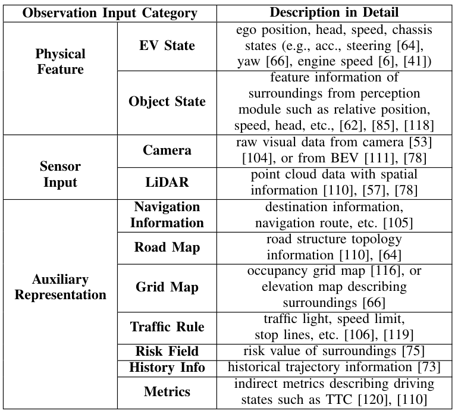TABLE I OMMON OBSERVATION INPUT CATEGORIES AND DESCRIPTIONS
TABLE I 常见观察输入类别及其描述
observation inputs contain nearly all environmental features, directly feeding them into policy networks for learning may increase computational complexity and impede the efficient extraction of latent features. In addition, when these multisource observation inputs are incomplete or perturbed, policy execution may be unstable.
观测输入几乎包含了所有环境特征，直接将这些信息喂入策略网络进行学习可能会增加计算复杂性，并妨碍潜在特征的有效提取。此外，当这些多源观测输入不完整或受到干扰时，策略执行可能会变得不稳定。
💡 上次提示:
[[HEADER: B. Action Output]]
B. Action Output
💡 上次提示:
he agent interacts with the environment by executing actions, updating its state accordingly. In the current RL theoretical framework, the form of action output directly determines the model type, and is generally classified into discrete and continuous action. In addition, there are some approaches that use indirect actions and hierarchical actions.
2) Action Space Design a) Discrete Commands: Discrete commands can represent high level decisions such as LCL, LCR and LK for the lateral vehicle behavior or a discrete set of acceleration/deceleration values in term of longitudinal dynamics. They can be viewed as prescribing vehicle semantic behavior. In some early studies, a set of discrete instructions was also used as an action space, thus the agent could to select one of discrete values, e.g., for the steering angle.
智能体通过执行动作与环境进行交互，并相应地更新其状态。在当前的强化学习理论框架中，动作输出的形式直接决定了模型类型，通常被分为离散动作和连续动作两类。此外，还有一些方法使用间接动作和层次化动作。
2) 动作空间设计
a) 离散命令：离散命令可以表示横向车辆行为（如LCL、LCR和LK）或纵向动力学中的加减速值等高层次决策。它们可以被视为规定了车辆的语义行为。在一些早期的研究中，一组离散指令也被用作动作空间，因此智能体可以选择这些离散值之一，例如转向角。
💡 上次提示:
Moreover, Yu et al. [71] allow the RL agent to select candidate trajectories from a real-time generated trajectory set. b) Continuous Commands: However, by restricting to a discrete set of commands, one may not be able to obtain optimal solutions in various dynamic scenarios, especially at the vehicle control level. In addition, sudden changes in discrete commands can cause jerky oscillations in driving maneuvers.
If an RL agent aims to directly control vehicle motion, it typically outputs continuous commands such as the steering angle and acceleration. Therefore, Policy-based and Actor-Critic methods are widely used for direct vehicle control; they can be applied to nearly all AD MoP tasks.
此外，Yu等人[71]允许RL代理从实时生成的轨迹集中选择候选轨迹。b) 连续命令：然而，在动态场景中限制在一组离散命令可能无法获得最优解，尤其是在车辆控制层面。另外，离散命令的突然变化可能会导致驾驶动作出现生硬的振荡。
如果RL代理旨在直接控制车辆运动，则通常会输出连续命令，如转向角和加速度。因此，基于策略的方法和演员-评论家方法广泛用于直接车辆控制；它们可以应用于几乎所有AD MoP任务。
💡 上次提示:
[[HEADER: pp 2) Action Space Design]]
pp. 2) 动作空间设计
💡 上次提示:
Resource Table_2

TABLE II COMMONLY USED ACTION OUTPUT FOR RL-BASED MOP
TABLE II 基于RL的MoP中常用的行动输出
c) Indirect Commands: In addition, an indirect command can be an output to affect the vehicle’s motion. For instance, some studies indirectly plan continuous feasible trajectories by learning trajectory parameters (such as polynomial coefficients, objective function weights, etc.). Through parameterized action based RL framework, heterogeneous trajectory parameters can be generated synchronously, as in recent PDQN [124], RL-TPA [122], and other approaches.
Other works generate interactive actions to determine reference states for MoP, and then solve for optimal trajectories by, for example, constructing an optimal control problem, e.g., RL+MPC [125], etc. d) Hierarchical Actions: HRL uses different networks to determine heterogeneous components of whole actions.
The hierarchy can be serial (upper layer outputs discrete behaviors, lower layer outputs control commands), parallel (heterogeneous control commands are output simultaneously), or even hybrid [61], [120], [123]. Complex driving tasks can be simplified and split in this way but may suffer from sparse rewards.
In particular, actions in different layers may be executed at different timescales, e.g., the upper layer’s lane change decision may be updated over a long timestep, whereas the lower layer’s steering commands may be outputted over a short timestep. In strictly HRL theory, a synchronously learned factor β is introduced to determine the update timing for upper level action [38], but this remains underexplored in MoP research.
层次结构可以是串行的（高层输出离散行为，低层输出控制命令）、并行的（同时输出异构控制命令），或者甚至是混合型的[[61],[120],[123]]。通过这种方式，复杂的驾驶任务可以被简化和拆分，但可能会遭受稀疏奖励的问题。
特别是，在不同的层次中执行的动作可能在不同的时间尺度上进行，例如，高层的变道决策可能在一个长的时间步内更新，而低层的转向命令则可能在一个短的时间步内输出。在严格的意义上的人工智能层次化强化学习（Hierarchical Reinforcement Learning, HRL）理论中，引入了一个同步学习因子β来确定高层动作的更新时机[[38]]，但在MoP研究中这仍然是一个未被充分探索的领域。
💡 上次提示:
In addition, the optimal consistency of the hierarchically generated actions may be affected since the upper-layer network cannot fully access the policy information of the lower-layer network when generating actions. Note also that the parameterized action based RL can be further extended to hierarchical architectures [126]. 2) Control Granularity Early research on RL for AD focused on decision-making for discrete behaviors.
In recent years, direct control of the steering angle and acceleration has become a simple and popular choice; notably it facilitates determining continuous driving
此外，由于高层网络在生成动作时无法完全访问低层网络的策略信息，因此层次生成的动作的一致性可能受到影响。值得注意的是，基于参数化动作的强化学习可以进一步扩展到层次结构中[[LINK: 126|[126]]]。2) 控制粒度
早期对RL在AD中的研究主要集中在离散行为的决策制定上。
近年来，直接控制转向角和加速度已成为一种简单且流行的选择；显著地，这便于确定连续驾驶行为。
💡 上次提示:
[[HEADER: 2) Control Granularity]]
2) 控制粒度
💡 上次提示:
actions through a much larger policy network. Thinking about control granularity cannot be ignored. At the same time, applying RL to trajectory-level actions can enrich the control granularity of RL-based MoP and improve the agent’s ability to focus on driving behaviors, control them more accurately and cope with complex, dynamic road environments.
However, the loss function in RL is typically generated indirectly based on accumulated reward signals, rather than being directly derived from expert trajectory data, as in IL. Consequently, achieving convergence for high-dimensional waypoint actions is often difficult. Related research based on a parameterized action space [126] has emerged as a promising direction to facilitate action granularity design.
通过一个更大的策略网络来实现这些动作。考虑控制粒度是不可忽视的。同时，将RL应用于轨迹级动作可以丰富基于RL的方法（MoP）的控制粒度，并提高代理对驾驶行为的关注能力、更准确地控制这些行为以及应对复杂多变的道路环境。
然而，RL中的损失函数通常是间接根据累积奖励信号生成的，而不是像在IL中那样直接从专家轨迹数据中推导出来的。因此，对于高维航点动作实现收敛往往是困难的。基于参数化动作空间的相关研究[126]已经 emerged 作为促进动作粒度设计的一个有前景的方向。
💡 上次提示:
Enabling the RL agent to output trajectory waypoints can further exploit the capabilities of RL. For instance, developers could evaluate the RL interaction with the environment objectively, which makes it easier to design a safety guarantee. Furthermore, this could greatly enhance the interpretability of RL MoP. The commonly used action outputs for RL-based MoP are summarized in TABLE II.
使RL代理能够输出轨迹航点可以进一步发挥RL的能力。例如，开发者可以客观地评估RL与环境的交互情况，这使得设计安全保证变得更加容易。此外，这还能大大增强基于RL的方法的操作模式（MoP）的可解释性。常用的基于RL的方法的动作输出总结在TABLE II中。
💡 上次提示:
[[HEADER: C. Reward Function]]
C. 奖励函数
💡 上次提示:
Reward design can significantly influence the performance of the RL agent as it directly informs the loss function required for network updating. Driving is a multi-attribute problem, and these attributes may include the time to reach destination, travel distance, collision, legal compliance, energy consumption, passenger experience, impacts on the traffic environment, etc. [127].
Defining a driving performance metric for an autonomous vehicle involves identifying various attributes and quantitatively describing them, and then combining them into a utility function. Current RL models for AD typically formulate the reward function as a weighted linear combination [16]. 1) Reward Attributes Safety, efficiency, comfort, and traffic compliance are typical attributes considered when designing reward functions for AD.
On this basis, different driving tasks can incorporate unique reward functions to better achieve task-specific goals. a) Safety: Whether a collision occurs, including collision with vehicles or pedestrians, or out of road, is a direct measure of the safety. Some metrics that reflect the degree of potential danger are used to jointly describe the safety attribute, e.g., time to collision (TTC), and distance to SVs (DTV).
b) Efficiency: For efficiency, speed is a commonly used metric, e.g., driving at the desired speed or as fast as possible. Additionally, success, i.e. reaching the goal or completing the task, and the corresponding costs can be used as other important metrics for specific tasks. Examples include the success rate and time spent passing through an intersection, merging onto a main road, and completing a parking task.
在此基础上，不同的驾驶任务可以采用独特的奖励函数以更好地实现特定目标。a) 安全性：是否发生碰撞（包括与车辆或行人的碰撞，或者偏离道路），是直接衡量安全性的指标。一些反映潜在危险程度的度量标准被用来共同描述安全性，例如碰撞前时间 (TTC) 和与最近障碍物的距离 (DTV)。
b) 效率：对于效率而言，速度是一个常用的度量标准，比如以期望的速度行驶或尽可能快地行驶。此外，成功（即达到目标或完成任务）及其相应的成本可以作为其他重要指标用于特定任务。例如成功率、通过交叉口、并入主路以及完成泊车任务所花费的时间等。
💡 上次提示:
c) Comfort: The reward for comfort is relatively straightforward to define and is usually correlated with the smoothness of the vehicle’s motion, including jerk, and lateral acceleration. Some studies use the variance of acceleration and the steering angle to further measure motion smoothness/comfort. In particular, racing and off-road tasks prioritize maneuverability over comfort.
c) 舒适度：舒适度的奖励相对容易定义，通常与车辆运动的平滑性相关，包括加速度和转向角的变化率（jerk）以及侧向加速度。一些研究还使用加速度和转向角度的方差来进一步衡量运动的平滑性和舒适度。特别是，在赛车和越野任务中，机动性优先于舒适度。
💡 上次提示:
[[HEADER: he reward function as a 1) Reward Attributes]]
he reward function as a 1) Reward Attributes
💡 上次提示:
Resource Table_3
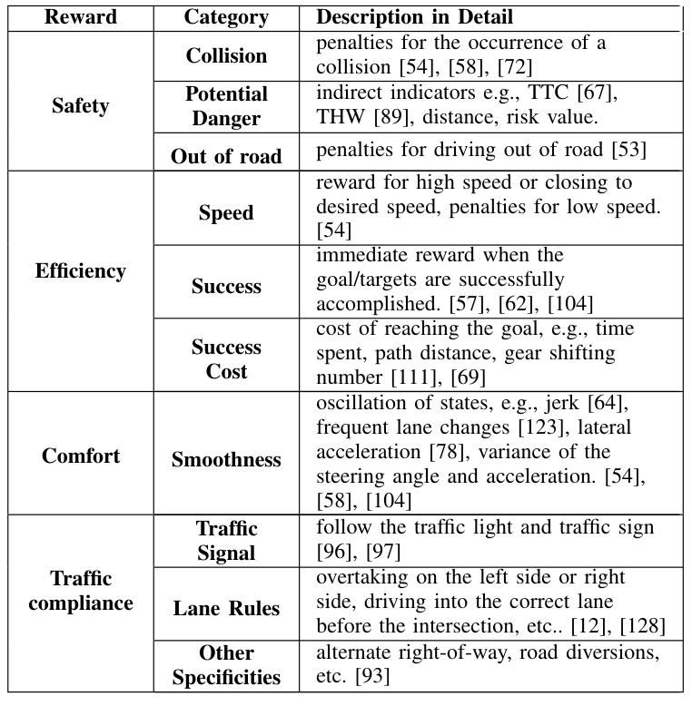TABLE III REWARD DESIGN FOR RL MOP APPROACHES
TABLE III RL MoP方法中的奖励设计
d) Traffic Compliance: Traffic rules represent a highly complex set of guidelines, encompassing multiple semantic levels of understanding and evaluation [128]. Common traffic rule conformance includes adhering to traffic signals, staying in the correct lane, not speeding, etc. There are also specific rules for certain scenarios, such as alternate right-of-way and road diversions.
A suitable generalization paradigm has yet to be established in the literature, since this attribute primarily appears in the urban navigation task and most studies approach it indirectly through multi-modal inputs and expert data labeling. The common reward functions mentioned above from both actual attributes and shaping rewards are listed in Table III. 2) Reward Utilization Most RL related studies use weighted summation to combine different rewards.
Knox et al. [127] discusses the calculation of weight factor limits, using crash, idle and success attributes as examples. However, human-manual weighting does not effectively harmonize the trade-offs and conflicts between multiple objectives. Parameter tuning methods such as GLIS [129] could be used to optimize the weight coefficient, which is an optional means.
In addition, Inverse Reinforcement Learning methods are applied to learn the weight of each attribute [130] or the reward value [131] from expert experience. Nevertheless, weighted tuning has a limited impact on improving achievable performance, and agents can still be skewed toward larger single-attribute rewards. The recent Multi-Critic approach excels in accommodating multiple objectives simultaneously [132].
Yuan et al. [133] decompose the value estimation based on a single reward function into decentralized estimation based on multiple reward functions through multiple Q-networks, which allows agents to better
[[HEADER: 2) Reward Utilization]]
2）奖励利用
💡 上次提示:
balance multiple learning objectives. Moreover, [134] incorporates the context as an input to construct a reward machine to transform the reward functions for different tasks/scenarios, enhancing the adaptability to environmental changes. 3) Reward Shaping When reward signals from objective attributes are sparse, it is a natural idea to encourage and indicate seemingly desirable maneuvers in reward functions, which is formalized as reward shaping [127].
For example, adding a reward for staying near the lane centerline can help a vehicle to quickly learn how to keep on track. However, combining this partially shaped rewards with existing safety rewards may lead the RL agent unexpectedly fall into a local optimum, such as persistently following SVs at a low speed, which is not actually the desired driving behavior.
Common shaped rewards via one or more attributes include suggesting zero steering angle [105], increasing the separation distance with SVs [12], overtaking other vehicles [76], etc. While reward shaping improves the learning efficiency, it may reduce the achievable performance by subjectively changing the preference order of the reward function.
As Russell and Norvig assert [135], “It is better to design performance metrics according to what one actually wants to be achieved in the environment, rather than according to how one thinks the agent should behave”. The survey [127] boils it down to a pithy description: “specify how to measure outcomes, not how to achieve them.” Despite its theoretical drawbacks, reward shaping remains effective in RL-based MoP methods as of this time.
通过一个或多个属性提供的常见形状奖励包括建议零转向角[[LINK: [105]|[105]]]、增加与SVs的分离距离[[LINK: [12]|[12]]]、超越其他车辆[[LINK: [76]|[76]]]等。虽然奖励塑造可以提高学习效率，但它可能会通过主观改变奖励函数的偏好顺序而降低可实现性能。
正如Russell和Norvig所主张的[[LINK: [135]|[135]]]：“应根据实际希望在环境中实现的目标来设计性能指标，而不是根据认为代理应该如何行为来进行设计”。综述[[LINK: [127]|[127]]]将其精炼地描述为：“规定如何衡量结果，而不是如何实现它们。”尽管存在理论上的缺陷，但奖励塑造仍然在基于RL的方法中有效。
💡 上次提示:
Until a better learning way emerge, reward shaping techniques, such as risk-aware shaping for safety [136] or directly traffic rule guidance, can enhancing driving performance to a certain extent. However, the potential negative consequences of each shaping operation need to be carefully considered. Designing effective reward functions remains an open problem, limiting the RL performance in MoP for AD as well as in other control tasks.
[[HEADER: g p 3) Reward Shaping]]
g p 3) 奖励塑形
💡 上次提示:
[[HEADER: V. EXPLORATORY EFFORTS TO ADDRESS CONTEMPORARY CHALLENGES]]
V. 探索性努力以应对当代挑战
💡 上次提示: 重新翻译
Although there have been many significant achievements in RL-based MoP, there are still many challenges in applying it to real-world AD systems. Owing to page limitations, we focus on three attributes that have the greatest impact on RL-based MoP for AD, i.e., safety performance, sample efficiency, and generalization capability. Other attributes, such as interpretability and ethics, are not discussed in this survey, and interested readers are referred to [15], [17], which address such topics.
This section reviews recent exploratory efforts for these three frontier issues and proposes directions for future research. Since promoting sample efficiency and generalization capability share some common technical aspects, we distinguish them according to the primary motivation for using these techniques to enhance the performance of RL-based MoP.
[[HEADER: A. Safety Performance]]
A. 安全性能
💡 上次提示:
Safety is a fundamental requirement for AD. However, the RL agent may sometimes prioritize maximizing the overall reward over ensuring safety, especially under conditions where multiple objectives are considered. This can lead to unsafe or even disastrous behaviors, which is the most important hindrance to the application of RL to real-world AD [65].
Consequently, an increasing number of researchers have focused on the safety of RL-based MoP methods and have begun to explore the application of Safe RL. Safe RL is often modeled as the Constraint MDP (CMDP) [137], which additionally minimizes safety-related cost Cπ(s) = E[PH+h t=h γt−hct+1|sh = s] while maximizing cumulative reward expectations, where ct is the safety-related cost value at timestep t.
The objective of CMDP is to find a policy πθ ∈ΠC to maximize the expected reward, where ΠC = {πθ|Cπ(s) ≤Cthres} represents the safe policy set with a cost threshold Cthres. Safe RL applied in the MoP can usually be categorized as: i) Policy objective optimization: This method uses the cumulative cost values on the trajectories to search for safe policies, gradually converging to safe set.
ii) Hard safety constraint: Stricter requirements on the safety of each step are imposed during training or testing through predefined constraints. This type of approach can further enhance safety, but is more conservative. 1) Policy Objective Optimization Constrained Policy Optimization (CPO) is frequently used to guide the generation of a safer driving policy [138].
CMDP的目标是找到一个策略πθ ∈ ΠC，以最大化预期奖励，其中ΠC = {πθ|Cπ(s) ≤ Cthres}表示具有成本阈值Cthres的安全策略集。在MoP中应用的Safe RL通常可以归类为以下两种类型：i）策略目标优化：这种方法利用轨迹上的累积成本值来搜索安全策略，并逐步收敛到安全集合。
ii）硬性安全约束：通过预定义的约束，在训练或测试过程中对每一步的安全性提出更严格的要求。这种类型的方案可以进一步增强安全性，但更为保守。1) 策略目标优化
受限策略优化（CPO）经常被用来引导生成一个更安全的驾驶策略 [138]。
💡 上次提示:
Wen et al. [139] employed parallel CPO agents to collect sufficient safe and feasible experiences for policy updates, mitigating the driving risks of CPO failures in hazardous situations. Additionally, Lagrangian-based methods transform constrained safety optimization problems into unconstrained problems via Lagrange multipliers. In [64], a Lagrangian network adaptively adjusted penalties for constraint violations, while a feasible value network evaluates policy feasibility.
Furthermore, inspired by the amygdala mechanism, Lv et al. [96] employ a fear model to recognize potential dangers and contingencies, aiming to maximize the expected return while adhering to the fear constraint. Many researchers integrate Control Lyapunov Functions (CLFs) [140] or Control Barrier Functions (CBFs) [141] as constraints.
In [142], a CLF based on the relative distance to obstacles is established, treating the collision probability as a risk factor in the critic with the policy gradient to improve safety. Udatha et al. [143] implement a distancebased probabilistic CBF, which is then converted into linear control constraints to ensure that policy updates adhere to safety requirements.
Moreover, Yang et al. [144] take this further by learning a barrier function from collected unsafe and initial states, eliminating the need for prior knowledge. Meanwhile, some works consider uncertainty in safety guiding the agent’s exploration. In [145], RL policy is updated only when its performance confidence exceeds the baseline, achieving safer behaviors.
在[142]中，基于相对距离到障碍物的临界函数（CLF）被建立起来，并将碰撞概率视为评论者中的一个风险因素，通过策略梯度来提高安全性。Udatha等人[143]实现了一个基于距离的概率CBF（Collision-Based Feasibility Barrier），然后将其转换为线性控制约束以确保策略更新符合安全要求。
此外，Yang等人[144]在此基础上进一步学习一个障碍函数，从收集到的不安全状态和初始状态中进行学习，从而消除对先验知识的需求。同时，一些研究工作考虑了在安全性引导下的代理探索不确定性。在[145]中，仅当强化学习策略的表现置信度超过基线时才更新策略，从而实现更安全的行为。
💡 上次提示:
Zhang et al. [146] use variance from ensemble critic networks to encourage exploration and to determine when to switch from a Lagrangian-based approach to a rule-based approach. In [147], CVaR-based distributional critics facilitate the safety policy update, with the policy space adaptively expanding when actions near the boundary are identified as safe. 2) Hard Safety Constraint
[[HEADER: 1) Policy Objective Optimization]]
1) 政策目标优化
💡 上次提示:
[[HEADER: i 2) Hard Safety Constraint]]
ii 2) 硬安全约束
💡 上次提示:
Setting driving rules or rule-based MoP as a safety filter is an intuitive way to enhance the policy’s safety [148]. Gu et al. [149] propose a method that combines traditional MoP method with RL, where the safety buffers around obstacles constrain the RL output to collision-free path points. Wang et al. [150] develop a CBF that account for both longitudinal and lateral constraints, combined with predefined traffic rules, to ensure EV safety.
Some filters are constructed based on conditional criteria. Reference [151] uses Linear Temporal Logic (LTL) based on prior safety rules to assess the current policy’s safety, triggering a rule-based emergency response if the RL action is deemed unsafe. References [118] and [125] employ MPC-based longitudinal pre-planning to assess whether a safe and feasible acceleration can be generated.
将驾驶规则或基于规则的方法（MoP）设置为安全过滤器是一种直观的方式，以增强策略的安全性[148]。Gu等人[149]提出了一种方法，该方法结合了传统的MoP方法和强化学习（RL），其中障碍物周围的缓冲区约束了RL的输出，使其仅产生无碰撞路径点。Wang等人[150]开发了一种考虑纵向和横向约束条件的CBF，并结合预定义的交通规则以确保电动汽车的安全。
一些过滤器是基于条件标准构建的。参考文献[151]使用基于先验安全规则的线性时序逻辑（LTL）来评估当前策略的安全性，如果认为RL动作不安全，则触发基于规则的紧急响应。参考文献[118]和[125]采用基于模型预测控制（MPC）的纵向预规划来评估是否可以生成一个安全可行的加速度。
💡 上次提示:
If unsafe, the vehicle remains in its original lane, and the masked unsafe decision is fed back to update the DQN’s network. Uncertainty can also be used in constraint design for safe RL, which typically includes aleatoric uncertainty and epistemic uncertainty [42]. Aleatoric uncertainty can be expressed as the risk from the scenario measured by the distribution of returns.
It allows the RL agent to balance risk and efficiency after convergence and achieve performance similar to those trained in a risk-sensitive way [152]. Epistemic uncertainty usually arises from the insufficient scene training and can be represented by the variance of the ensemble network. In [153], the RL policy reverts to a rule-based policy if the uncertainty evaluated exceeds a safety threshold. Predicted information can be leveraged to ensure safety over a long horizon.
如果检测到不安全情况，车辆将保持在原车道不变，并将隐藏的不安全决策反馈以更新DQN的网络。不确定性也可以用于安全强化学习（Safe RL）的约束设计中，通常包括 aleatoric 不确定性和 epistemic 不确定性[[42]]。aleatoric 不确定性可以表示为由回报分布衡量的风险。
这使得在收敛后，RL 代理能够平衡风险与效率，并实现类似于风险敏感训练方式下的性能[[152]]。epistemic 不确定性通常源于场景训练不足，可以通过集成网络的方差来表示。在文献[[153]]中，如果评估的不确定性超过安全阈值，则 RL 策略将回退到基于规则的策略。预测信息可以用来确保长时间范围内的安全性。
💡 上次提示:
In [12], actions are mapped to trajectories, and the risk of each action is assessed based on the EV’s own trajectory and the predicted trajectories of SVs, with highrisk actions being discarded and replaced by safer alternatives. The effectiveness of this approach is validated in real-world lane-change experiments with different vehicle speeds and gaps, significantly reducing the risky behavior of the RL agent.
Moreover, Krasowski et al. [154] and Gu et al. [64] introduce the concept of a safe action set based on a prediction embedded framework, which is used to replace the actions of RL with safe alternatives in the event of a failure in the following vehicle strategy. Additionally, [155] and [156] construct optimization-based filters to guarantee that the agent remains safe at all times, while minimizing modifications to the RL policy.
A related work [157] uses MPC as a filter to ensure that the agent always stays within a safe invariant set.
在文献[12]中，动作被映射到轨迹上，并基于自主车辆（EV）自身的轨迹及其预测的其他车辆（SVs）的轨迹来评估每种动作的风险。高风险的动作会被丢弃并替换为更安全的选择。这种方法的有效性通过不同车速和车间距的真实道路变道实验得到了验证，显著减少了RL代理的危险行为。
此外，Krasowski等人[154]和Gu等人[64]提出了基于预测嵌入框架的安全动作集的概念，在后方车辆策略失败的情况下，使用安全替代方案替换RL的动作。另外，文献[155]和[156]构建了基于优化的滤波器，以确保代理在所有时间点都保持安全状态，并尽量减少对RL策略的修改。
相关工作[157]使用模型预测控制（MPC）作为滤波器，以确保代理始终处于一个安全不变集内。
💡 上次提示:
[[HEADER: B. Sample Efficiency]]
B. 样本效率
💡 上次提示:
Owing to the interactive update paradigm of RL, a substantial number of samples are usually required to construct learning experiences with feedback rewards to generate feasible policies, which leads to sample efficiency problem. This problem is particularly evident in the AD MoP field because of the open interaction environment with large state space and hardto-collect long-tail data, which results in slow driving policy convergence and lower-than-expected driving performance.
Since the complexity of interactions within the environment, it is challenging to objectively and effectively obtain reward signals in an AD task. In addition, many driving tasks exhibit temporal correlations, which can further amplify the effects of delayed rewards. In addition, the RL agent must spend a considerable amount of time on constant trial-and-error in the massive exploration space.
由于强化学习（RL）的交互式更新范式，通常需要大量的样本来构建带有反馈奖励的学习体验以生成可行策略，这导致了样本效率问题。这一问题在AD MoP领域尤为明显，因为存在一个开放的交互环境和巨大的状态空间，并且难以收集长尾数据，从而导致驾驶策略收敛速度缓慢以及低于预期的驾驶性能。
由于环境中的交互复杂性，客观有效地获取奖励信号在AD任务中极具挑战性。此外，许多驾驶任务具有时间相关性，这会进一步放大延迟奖励的影响。另外，RL代理必须花费大量时间在庞大的探索空间中进行不断的尝试与错误。
💡 上次提示:
Besides, it is difficult to gain valuable experience to further improve driving policy performance in the late training stage. These factors contribute to the sample data cost. To address these challenges, researchers have aimed to enable the RL agent to learn more driving experience from limited samples, thus improving the overall performance of MoP, and accelerating its deployment and application in AD.
1) Learning from Demonstration (LfD) To facilitate faster learning of optimal driving by the RL agent, learning from demonstration (LfD) takes an inspiration from human learning styles. LfD can effectively handle initial exploration where the reward signal is too sparse or the exploration space is too large to be covered. A demonstration can usually be a priori rule models or expert data from human drivers or, alternatively, pre-trained policies.
此外，在后期训练阶段，很难获得有价值的经验以进一步提高驾驶策略的表现。这些因素导致了样本数据成本的增加。为应对这些挑战，研究人员致力于使强化学习（RL）代理能够从有限的数据中学习更多的驾驶经验，从而提高MoP的整体性能，并加速其在自动驾驶中的部署和应用。
1) 示范学习（LfD） 为了促进RL代理更快地学习最优驾驶方式，示范学习（LfD）借鉴了人类的学习模式。LfD可以在初始探索阶段有效发挥作用，特别是在奖励信号稀疏或探索空间过大难以覆盖的情况下。一个示范通常可以是先验规则模型、来自人类驾驶员的专家数据，或者预先训练好的策略。
💡 上次提示:
a) Learning from a rule-based planner: The RL agent can be simply and directly guided through rule-based policy demonstration. Alighanbari et al. [158] generates switchable policy through the NMPC controller, and the experience generated by NMPC is used to guide the DDPG to speed up learning. Zhang et al. [13] design an optimization-based trajectory planner to offer the possible motion state data of the EV according to different decision parameter values.
When recalled in RL, the related planning parameters are quickly obtained via NelderMean search method. In [159], an expert system consisting of constrained iterative LQR and PID controllers is incorporated into RL training to improve sample efficiency in autonomous overtaking tasks. Similarly, Li et al. [12] design a formalized rule-based correction mechanism considering predicted risks, where multi-memory batches are set to store expert guidance experiences to further improve sample efficiency.
a) 从基于规则的规划器学习：RL智能体可以通过基于规则的策略演示简单直接地进行引导。Alighanbari等人[158]通过NMPC控制器生成可切换的策略，并利用NMPC产生的经验来指导DDPG加速学习。Zhang等人[13]设计了一种基于优化的轨迹规划器，根据不同的决策参数值提供电动汽车可能的运动状态数据。
在RL中回忆时，相关规划参数可通过Nelder-Mead搜索方法迅速获得。在[159]中，将一个由约束迭代LQR控制器和PID控制器组成的专家系统整合到RL训练中，以提高自主超车任务中的样本效率。类似地，Li等人[12]设计了一种考虑预测风险的正式化规则修正机制，在此机制中设置了多记忆批处理来存储专家指导经验，进一步提高样本效率。
💡 上次提示:
b) Learning from Human-Guidance: Combining human guidance with RL can be a promising way to alleviate the sample efficiency issue. A common tactic is to use demonstrations from human experts as a sampling experience for the RL agent. DQfD [160] incorporates expert demonstrations into the replay buffer with extra priority.
Liu et al. [161] combine the objectives of reward maximization and expert imitation, and then sample the experiences from both the agent’s self-exploration and the human demonstrations with an adaptive dynamic sampling ratio. Gao et al. [162] propose a unified Normalized Actor-Critic, where soft policy gradient formulations are used to reduce the Q-values of actions that were not observed from the demonstrations, thereby mitigating learning bias from low-quality demonstrations.
In [125], human online interventions are triggered when an agent outputs unfavorable actions, which can limit unsafe exploration during training, and provide demonstrations in complex scenarios. Similarly, Wu et al. [163] establish an integrated framework including human/RL action switch mechanism, advantagebased prioritized experience, and human-intervention reward shaping. Its unique discriminatory ability for the quality of human guidance contributes to better learning performance.
c) Learning with a pre-trained policy: A near-optimal policy
[[HEADER: , g p y 1) Learning from Demonstration (LfD)]]
, g p y 1) 示教学习（LfD）
💡 上次提示:
extracted from offline demonstrations can be effectively used for online fine-tuning [164]. Huang et al. [165] distill human prior knowledge into imitative expert policy using Behavior Cloning (BC). Subsequently, a penalty term based on Kullback–Leibler (KL) divergence is added to the reward function, making it fast close to the expert policy in online learning.
Shi et al. [117] employ DAGGER to train an IL agent for online RL initialization, which only requires a small amount of scene data to address the learning inefficiency under sparse rewards. In [166], Decision Transformer [167], which is an approach lying in between BC and offline RL, is used to extract a lightweight policy from large-scale offline guidance strategies during online interactions.
从离线演示中提取的数据可以有效用于在线微调[[164]]。黄等[[165]]利用行为克隆（BC）将人类先验知识提炼为模仿专家策略。随后，在奖励函数中添加了一个基于Kullback-Leibler（KL）散度的惩罚项，使其在在线学习过程中快速接近专家策略。
石等[[117]]采用DAGGER训练IL代理进行在线RL初始化，仅需少量场景数据即可解决稀疏奖励下的学习效率问题。在[166]中，使用介于行为克隆（BC）和离线强化学习（offline RL）之间的决策转换器（Decision Transformer）[[167]]从大规模的离线指导策略中提取轻量级策略，在在线交互过程中进行利用。
💡 上次提示:
It outperforms policy initialization via both BC and offline RL for safety-critical navigation and AD tasks. 2) Task Differentiation It challenging to directly learn an effective driving policy in a complex MoP task. Decomposing the task into different parts is a feasible way [168]. Instead of learning to deal with the whole task directly starting from a complex environment, the agent learns the different sub-tasks in stages.
The initial task guides the RL agent to perform better on the final task [169], reducing the learning complexity and improving convergence and sample efficiency. a) Curriculum Learning: Curriculum Learning (CL) is a training technique that breaks down the learning process into tasks of increasing complexity. It enables incremental learning, which helps premature failure under high complexity and enhances learning efficiency.
它在安全关键的导航和AD任务中，无论是通过行为克隆（BC）还是离线强化学习（offline RL），都表现出更优的策略初始化效果。2) 任务差异化
直接在一个复杂的多目标规划（MoP）任务中学习有效的驾驶策略具有挑战性。将任务分解为不同的部分是一种可行的方法[[168]]。与从一个复杂环境直接开始学习整个任务不同，代理分阶段学习不同的子任务。
初始任务可以引导RL代理在最终任务上表现更好[169]，从而降低学习复杂度、提高收敛性和样本效率。a) 逐级学习：逐级学习（CL）是一种训练技术，将学习过程分解为逐步增加复杂性的任务。它使增量学习成为可能，在高复杂性下避免过早失败并增强学习效率。
💡 上次提示:
Traditionally, CL relies on manually defined stages, with task difficulties set by human experts. Shi et al. [170] design three-stage curriculum RL including adaptive cruise control, lane changing, and overtaking tasks with different reward functions. Anzalone et al. [106] progress from static to complex traffic and weather conditions through five stages, with data augmentation in the final phases to learn complex behaviors.
Research on automatic curriculum generation has emerged to overcome the limitations of manual curriculum design. Banerjee et al. [111] used Bayesian optimization to automatically select curriculum through probabilistic inference on curriculum-reward functions. Niu et al. [171] decompose driving policy optimization into evaluation, scenario selection, and training.
传统上，元学习（CL）依赖于人工定义的阶段，并由人类专家设定任务难度。Shi等人[[LINK: Fig.1|Fig.1]]设计了一个包含自适应巡航控制、变道和超车等不同奖励函数的任务三阶段课程强化学习（RL）。Anzalone等人[[LINK: Fig.2|Fig.2]]则从静态交通条件逐步过渡到复杂交通和天气条件，通过五个阶段的学习，并在后期使用数据增强来学习复杂的驾驶行为。
为了克服手动设计课程的局限性，自动课程生成的研究已经兴起。Banerjee等人[[LINK: Eq. 1|Eq. 1]]利用贝叶斯优化自动选择课程，通过对课程-奖励函数进行概率推断来进行选择。Niu等人[[LINK: Table_1|Table1]]将驾驶策略优化分解为评估、场景选择和训练三个步骤。
💡 上次提示:
By dynamically estimating failure probabilities and resampling historical scenarios, this method provides real-time curriculum adaptation, improving learning robustness. Reference [172] introduce a task-driven labeled PAMDP based on LTL progression, which decomposes the training task at an abstract level and informs the RL agent of its current task progress. This technique enhances the exploration efficiency but so far limited to robotic grasping, with no application to complex MoP tasks in AD.
b) Transfer Learning: Transfer learning (TL) leverages knowledge reuse techniques [173] to utilize knowledge learned from related tasks. Originally, TL was intended to effectively transfer policies to new environments for better generalizability, which will be described in later Sec V.C later. At the same time, TL also contributes to sample efficiency, by allowing accelerating the learning process of new tasks with fewer samples. Specifically, given a set of source domain MS and
通过动态估计故障概率并重新采样历史场景，该方法提供了实时课程适应性，从而提高学习的鲁棒性。参考文献[172]介绍了一种基于LTL演进的任务驱动标记PAMDP（Partially Observable Markov Decision Process），它在抽象级别上分解训练任务，并向RL（Reinforcement Learning）代理告知其当前任务进度。该技术提高了探索效率，但目前仅限于机器人抓取任务，尚未应用于AD（Autonomous Driving）中的复杂MoP（Motion Planning）任务。
b) 迁移学习：迁移学习（TL）利用知识重用技术[173]来利用从相关任务中学到的知识。最初，TL旨在有效将策略转移到新环境中以提高泛化能力，这将在后续的Sec V.C中进行描述。同时，TL也有助于样本效率，通过使用较少的数据加快新任务的学习过程。具体来说，给定一个源域MS（Source Domain）集合，
💡 上次提示:
[[HEADER: 2) Task Differentiation]]
2）任务差异化
💡 上次提示:
target domain Mt, TL learns the optimal policy π∗and the target domain by utilizing exterior information from MS and interior information from Mt. For example, Yan et al. [174] use the policy trained in the source domain as the initialization policy for the target domain, thereby improving the policy performance and convergence speed in the target domain. Shu et al. [121] improve the control performance and learning efficiency of the Dueling DQN through three transfer rules.
c) Hierarchical Learning: Hierarchical learning architecture (as discussed in Sec IV.B) decomposes the overall task at the action-output level, which can also enhance the feasibility of rapidly learning policy for complex tasks [172].
For MoP for AD, generating only the steering angle usually results in the vehicle deviating far from the lane centerline, because it is difficult for an RL agent to quickly distinguish between lanechanging and lane-following behaviors during the learning process [175]. High-level discrete semantic behaviors and lowlevel control commands can be combined well to achieve more precise and flexible motion control while ensuring clear driving objectives[123].
Xia et al. [176] also define highlevel semantic behavior, and they couple them to low-level control actions, which computes fine-grained actions based on coarse-grained decisions that output them synchronously. The parameterized action space has achieved promising results in learning manipulation skills [177], but it has not been explored much in MoP for AD.
3) Promoting Exploration Efficiently exploring the environment and gathering informative experiences is also important for accelerating learning toward the optimal policy [42]. Uncertainty-oriented exploration generally considers epistemic uncertainty and aleatoric uncertainty, similar to the safety considerations discussed in Sec. V.A.
Lee et al. [178] leverage epistemic uncertainty to guide the policy in exploring unknown environments with high-uncertainty, allowing the RL agent to develop a more comprehensive understanding of the surroundings. Both types of uncertainty are considered in [179] within a single system to enhance the robustness of exploration against environmental noise. Intrinsic motivation-oriented exploration typically heuristically utilizes various types of reward-agnostic information to promote exploration.
In the absence of an explicit reward signal, the RL agent can use intrinsic motivation to evaluate the quality of its actions. Ma et al. [180] use intrinsic curiosity to drive the agent to explore the environment in advance and collect experience. Curiosity here is represented as the error in predicting the outcome of the agent’s actions in its current state, i.e., the agent learns from the prediction error of forward dynamics.
Wu et al. [181] use recurrent neural network to generate an intrinsic reward to encounter the RL agent to explore environment, improving exploration efficiency.
[[HEADER: 3) Promoting Explorationi]]
3) 促进探索
💡 上次提示:
[[HEADER: C. Generalization Capability]]
C. 一般化能力
💡 上次提示:
As noted in Sec. III, most studies have been conducted in low-cost simulation environments tailored to single-task settings. However, task variability can lead to policy failure when applied across different environments. Furthermore, owing to the inherent incomplete limitations of the RL training process, it has poor generalization ability in rare scenarios [182].
The ability for long-term multi-task learning is required to enhance the generalization ability of RL agents to the variety of ever-changing complex scenarios that real-world AD applications may face. The generalization ability includes both the policy that can be transferred to various driving tasks, and the robustness in response to perturbations during the execution [183].
Some cutting-edge techniques explored for the generalization capability of RL, but they have not yet been well applied in the field of MoP in AD. 1) Knowledge Transfer a) Transfer Learning: Knowledge reuse in TL can improve generalization across different but related or similar tasks. Balakrishnan et al. [184] apply a domain randomization technique to generalize the policy learned in the simple WiseMove environment to the high-fidelity simulator WiseSim.
Furthermore, Kevin et al. [185] combine domain adaptation and domain randomization techniques. By integrating virtual training with real-world data, they reduce the sim-to-real transfer gap in AD applications.
Hieu et al. [186] pre-train on demonstration data using a combination of temporal difference and supervised loss, and then continuously update the policy by incorporating demonstration data with newly collected data, resulting in strong performance across different road conditions and weather conditions.
一些前沿技术被探索用于增强强化学习（RL）的泛化能力，但这些方法尚未在AD中的MoP领域得到广泛应用。1) 知识迁移
a) 转移学习：通过在TL中重用知识可以提高不同但相关或相似任务之间的泛化能力。Balakrishnan等人[[LINK: [184]|等]]应用域随机化技术，将简单WiseMove环境中学到的策略推广到高保真模拟器WiseSim。
此外，Kevin等人[[LINK: [185]|等]]结合了领域适应和域随机化技术。通过整合虚拟训练与现实世界数据，他们在AD应用中减少了从仿真到现实世界的转移差距。
Hieu等人[[LINK: [186]|等]]在使用时间差分和监督损失的组合进行演示数据预训练后，不断通过结合新收集的数据更新策略，从而在不同道路条件和天气条件下表现出色。
💡 上次提示:
Shoeleh et al. [187] propose a skill-based transfer learning and domain adaptation method, which helps the agent discover the state-action mapping that represents the relationship between the source and target tasks, thereby providing knowledge generalization across multiple tasks. b) Meta Learning: Meta-RL aims to producing a broadly generalizable policy [188].
Generally, Meta-RL consists of an inner loop, which focuses on learning the specific task, and an outer loop, where the agent extracts knowledge from multiple tasks to improve its adaptability. In [189], following meta-training on the lane-change task under different traffic densities, the policy is able to safely handle meta-testing scenarios with high traffic densities.
Deng et al. [190] utilize parallel unfolding and multi-task objectives, meanwhile they design a two-stage constraint adaptation strategy to achieve rapid adaptation to new tasks by reusing meta-training data. c) Continual Learning: Continual RL (Cont-RL) aims to address the challenge of the ability limitation in handling new tasks without forgetting previously acquired knowledge, which enables continuous learning and adaptation to new environments [191].
Cont-RL requires an appropriate balance between the old and new tasks, with adequate generalizability to accommodate their distributional differences. Wei et al. [192] propose a shared feature extractor with an EWC loss to mitigate catastrophic forgetting and perform velocity control tasks across different environments.
Cao et al. [193] introduce a disengagement-case imagination augment continual learning (DICL) method, which is capable of constructing imaginationbased environments corresponding to disengagement cases and then improving driving policies within them. 2) Policy Stability a) Disturbance Robustness: Robust RL focuses on learning policies that exhibit performance robustness against system external disturbances, such as model mismatch and environ-
Cao等[193]提出了一种断开情况想象增强持续学习（DICL）方法，该方法能够构建与断开情况相对应的基于想象的环境，并在此环境中改进驾驶策略。2) 策略稳定性 a) 扰动鲁棒性：鲁棒强化学习关注于学习在系统外部扰动（如模型不匹配和环境变化）下仍能保持性能稳定性的策略。
💡 上次提示:
[[HEADER: well applied in the field of 1) Knowledge Transfer]]
well applied in the field of 1) Knowledge Transfer
💡 上次提示:
[[HEADER: p g 2) Policy Stability]]
💡 上次提示:
mental perturbations. Typically, robust RL is modeled as a two-player zero-sum Markov game, where an adversarial agent trains alongside the ego agent to maximize disturbances, forcing the RL agent to develop a robust policy in response to these disturbances. He et al. [194] develop an adversarial agent that maximizes the Jensen-Shannon (JS) divergence between the policy and the original policy under observation disturbances.
The RL agent incorporates the JS divergence as a constraint and use Lagrangian dual optimization to update its policy, thereby ensuring robustness to observation disturbances. Similarly in [86], the White-Box Adversarial Attack technique is employed to amplify the disturbance of each observation. Then, the policies of both the ego agent and the adversarial agent are weighted to output mixed actions, simulating the disturbances caused by environmental changes.
心理干扰。通常，鲁棒强化学习被建模为一个两玩家零和马尔可夫博弈，在这种博弈中，对手代理与自我代理一同训练以最大化干扰，迫使RL代理发展出针对这些干扰的稳健策略。He等人[[LINK: ID|He et al. [194]]]开发了一个最大化在观测干扰下策略与原始策略之间杰伦-香农（JS）散度的对手代理。
强化学习代理将JS散度作为约束条件，并使用拉格朗日对偶优化来更新其策略，从而确保对其它观测干扰具有鲁棒性。类似地，在[[LINK: ID|Ref. [86]]]中，白盒对抗攻击技术被用来放大每个观测的干扰。然后，自我代理和对手代理的策略被加权以输出混合动作，模拟由环境变化引起的干扰。
💡 上次提示:
Additionally, high-uncertainty RL policies can be replaced with more stable baseline policies [153], enabling timely adaptation to changes in the environment . b) Uncertainty Adaptation: Uncertainty can also be leveraged to improve RL generalization performance. Epistemic uncertainty can reveal the test scenarios that are underrepresented in the training.
Lutjens et al. [195] use MC-Dropout and Bootstrapping to achieve parallelized epistemic uncertainty estimation to promote more cautious actions in unknown environments, thereby improving policy generalization. In addition, Hoi et al. [196] propose a risk-conditioned distributional soft actor-critic method that learns risk-sensitive policies based on aleatoric uncertainty. It supports the adjustment of risklevel sensitivity without retraining, enabling safe generalization across various scenarios.
此外，高不确定性强化学习（RL）策略可以被更稳定的基线策略所替代[[LINK: Fig.1|Fig.1]]，从而能够及时适应环境的变化。b) 不确定性适应：不确定性也可以用来提高RL的泛化性能。先验不确定性可以揭示在训练中未充分代表的测试场景。
Lutjens等人[[LINK: Tab.2|Tab.2]]使用MC-Dropout和自助法来实现并行化的先验不确定性估计，从而在未知环境中促使采取更为谨慎的动作，进而提高策略的泛化能力。此外，Hoi等人[[LINK: Eq. 3|Eq. 3]]提出了一种基于偶然不确定性的风险条件分布软演员-评论家方法，该方法能够学习风险敏感性策略。它支持无需重新训练即可调整风险水平的灵敏度，从而在各种场景下实现安全泛化。
💡 上次提示:
Some works further attempt to leverage both epistemic and aleatoric uncertainty within a system to improve adaptability to the environment [197]. Hoel et al. [152] propose Ensemble Quantile Networks (EQN), where Bayesian estimates of epistemic uncertainty are obtained through model ensemble methods, which are used to select actions with lower risk in unknown environments.
Meanwhile, aleatoric uncertainty is implicitly learned through quantile functions, balancing risk and time efficiency, thereby further enhancing the generalization capability. 3) Scenario Representation Establishing an effective and compact feature representation from observations that supports subsequent policy reasoning is also a key to improving generalization performance.
一些研究进一步尝试在系统中同时利用本体论不确定性（epistemic uncertainty）和偶然性不确定性（aleatoric uncertainty），以提高对环境的适应能力[[197]]。Hoel等人[[152]]提出了一种集成分位数网络（Ensemble Quantile Networks, EQN）的方法，通过模型集成方法获得本体论不确定性下的贝叶斯估计，并利用这些估计选择在未知环境中风险较低的动作。
同时，偶然性不确定性是通过分位数函数隐式学习的，这在平衡风险和时间效率方面起到了作用，从而进一步增强了泛化能力。3) 情景表示：从观测中建立一个有效且紧凑的功能表示形式，并支持后续策略推理也是提高泛化性能的关键。
💡 上次提示:
Duan et al. [198] map surrounding vehicles’ features into encoding vectors, which are then summed element-wise to create a representation set, ensuring that the policy network remains unaffected by vehicle arrangement and preventing strategy fluctuations. Similarly, an MLP encoding function and summation operator are constructed to handle traffic flows with participants of varying types and quantities [95]. The transformer is commonly employed to enhance scene understanding. G.
Zhan et al. [107] construct a transformation module to extract observations from surrounding participants, the ego vehicle, and traffic lights, and use an Aggregation Module to combine these features into a fixed-dimensional representation, enabling the agent to adapt to dynamic environments with varying numbers of traffic participants. LLMs present a promising avenue for improving scenario
[[HEADER: g g 3) Scenario Representation]]
g g 3) 场景表示
💡 上次提示:
understanding in MoP [199]. To release the agent from the burden of understanding the multi-modal data, LLMs can be used to extract meaningful feature representations and translate semantic or task information. Reference [200] model graphstructured reasoning through perception, prediction and planning question-answer pairs to mimic the human reasoning process, enabling the agent to correctly handle unseen deployment on Waymo after training only on NuScenes.
Reference [201] argues that the absence of task-relevant representations may hinder the mapping of the network from state to reward. Based on this motivation, they employ LLMs to generate task-related state representations accompanied by intrinsic reward functions for RL, which apply to both continuous and discontinuous reward scenarios, improving the adaptability of RL to new tasks.
[[HEADER: D. Open Challenges and Outlook]]
开放挑战与展望
在本研究的基础上，我们指出了几个关键的开放挑战，并探讨了未来的研究方向。首先，尽管我们的方法已经在多个场景中展示了其有效性，但在实际应用中仍面临一些技术难题。例如，在复杂光照条件下的鲁棒性问题、动态环境中的实时处理需求以及大规模数据集的高效处理等。其次，如何进一步提高模型的泛化能力也是一个重要的研究方向。此外，随着物联网和边缘计算的发展，如何将这些智能算法无缝集成到实际系统中也是一个值得探索的问题。
展望未来，我们希望本工作能够为相关领域的研究提供有价值的参考，并激发更多学者参与到这一前沿课题的研究中来。
💡 上次提示:
[[HEADER: 1) Safety Consideration]]
1) 安全考虑
💡 上次提示:
) Safety Evaluation: Both policy objective optimization and safety hard constraints require an evaluation of the risk of unsafety. Most methods rely on the assumption of a priori environment dynamics, such as simple safety rules, safety sets, state predictions, etc. [12], [64]. It is difficult to validate these assumptions until the autonomous vehicle is in action, which results in a model mismatch in the explicit knowledge of environmental dynamics in the open interactive environment.
We believe that learning environment dynamics offers a promising solution to alleviate this problem by performing several step forward simulation with learned dynamics. The mismatch problem can be mitigated while retaining the inherent utility of the models and providing better generalizability.
Moreover, further incorporating RL’s learning uncertainty into the risk evaluation process allows for a more comprehensive identification of dangerous scenarios and safety vulnerabilities with limited priori knowledge. b) Trade-off between Safety and Rewards: It is crucial to consider the trade-off between rewards and safety performance in an AD environment with complex interactions. On the one hand, if strict conservative cost functions are adopted, this may lead to poor reward utility.
In contrast, open constraints and costs can lead to unsafe policy [202]. On the other hand, policy-objective optimization encourages the agent to converge on a highly rewarding policy that satisfies the constraints, but it lacks theoretical safety guarantees. Hard safety constraints can limit the exploration space and tend toward an overly conservative driving policy [19]. Research on effectively combining the strengths of the two approaches is urgently needed.
此外，进一步将RL的学习不确定性纳入风险评估过程，可以在有限的先验知识下更全面地识别危险场景和安全漏洞。b) 安全与奖励之间的权衡：在具有复杂交互作用的AD环境中，考虑安全性能与奖励之间的权衡至关重要。一方面，如果采用严格的保守成本函数，可能会导致较差的奖励效用。
相比之下，开放约束和成本可能导致不安全的策略[[LINK: Fig.1|Fig.1]]。另一方面，策略目标优化鼓励代理收敛于一个高度奖励且满足约束的策略，但缺乏理论上的安全性保证。硬性安全约束可能限制探索空间，并倾向于过于保守的驾驶策略[[LINK: Fig.2|Fig.2]]。迫切需要研究有效结合这两种方法优势的方法。
💡 上次提示:
Importantly, less conservative but equally meaningful safety assurances depicting practically acceptable assumptions [203] is likely to become a technical priority. 2) Efficiently Learning a) Knowledge Integration: Knowledge integration, i.e., the incorporation of external knowledge into the RL training, is an important direction for improve sample efficiency. Embedding human or prior knowledge into RL policy has been shown to be effective in improving sample efficiency.
However, the performance of the current policy extracted from expert
[[HEADER: 2) Efficiently Learning]]
2) 效率学习
💡 上次提示:
demonstrations remains a concern. RL with human feedback (RLHF) [163], [204] is a popular approach, where reward models are learned from human-evaluation data. However, it becomes difficult to maintain when dealing with extensive training tasks. This area holds promise for further exploration. Future research should focus on how to efficiently extract quality human driving knowledge and effectively combine offline and online learning methods to integrate this prior knowledge into RL models.
b) Efficient Exploration: In environments with sparse, delayed rewards, several exploration methods have yielded promising results through uncertainty guidance or intrinsic motivation. However, most related research has not been applied to MoP tasks for AD. The currently dominant RLbased MoP paradigm integrates large multi-source observation inputs, and the difficulty of exploration increases as the size and complexity of the state-action space grow.
演示仍然存在一些担忧。带有人类反馈的强化学习（RLHF）[163]、[204] 是一个流行的方法，其中奖励模型是从人类评估数据中学习得到的。然而，在处理大量训练任务时维护起来变得困难。这一领域为未来的探索提供了潜力。未来的研究应集中在如何高效地提取高质量的人类驾驶知识，并有效地结合离线和在线学习方法，将这些先验知识整合到RL模型中。
b) 有效探索：在稀疏且延迟奖励的环境中，通过不确定性指导或内在动机已经产生了几种有效的探索方法。然而，大多数相关研究尚未应用于AD（自主驾驶）中的MoP任务。当前占主导地位的基于强化学习的MoP范式结合了大量多源观测输入，随着状态-动作空间规模和复杂性的增加，探索难度也随之增大。
💡 上次提示:
This is accompanied by a substantial increase in the computational cost of learning uncertainty, while the intrinsic motivation for facilitating exploration becomes more challenging to construct. How efficient exploration can be achieved in a large and complex state-action space remains unclear.
On the basis of task differentiation, one promising way is to establish a universal approach to extract the hierarchical structure of different environments, such as the recently popular parameterized action space design. In addition, representation learning [205] has been leveraged in several recent studies that include improving policy performance in environments with image states and hybrid actions.
这将伴随着学习不确定性所需计算成本的显著增加，而促进探索的内在动机也变得更加难以构建。在庞大且复杂的状态-动作空间中如何实现高效的探索仍然不清楚。
基于任务分化，一种有前景的方法是建立一个通用方法来提取不同环境的层次结构，例如最近流行的参数化动作空间设计。此外，在一些近期的研究中已经利用了表示学习[205]，这些研究包括在具有图像状态和混合动作的环境中提高策略性能。
💡 上次提示:
3) Generalization a) Simulation Fidelity: Deviations between simulations and the real world may lead to policy bias during implementation. Therefore, focusing on the development of more realistic and diverse simulation environments becomes critical. Many early works focused on accurately modeling the kinematic and dynamic behaviors of vehicles, creating simulation scenarios that do not adequately reflect the real world.
In recent years, game engine-based simulators have provided more physically and visually realistic data. The collection of multi-modal data from the real world and then reconstructing the environment have been widely explored recently. Data-driven simulators are beginning to replace game engine-based simulators by generating synthetic data directly from real data, achieving high fidelity with low costs [206].
3) 通用化 a) 模拟保真度：模拟与现实世界的偏差可能导致实施过程中出现政策偏见。因此，专注于开发更加真实和多样的模拟环境变得至关重要。许多早期的工作集中在准确建模车辆的运动学和动力学行为上，创建的模拟场景未能充分反映现实世界。
近年来，基于游戏引擎的模拟器提供了更物理和视觉真实的数据。从现实世界收集多模态数据并重新构建环境的做法已被广泛探索。数据驱动的模拟器开始通过直接从真实数据生成合成数据来取代基于游戏引擎的模拟器，从而以较低的成本实现高保真度 [206]。
💡 上次提示:
Despite the high data fidelity achieved through learning from real data, online interaction capabilities remain insufficient in current technologies. Combining training in low-fidelity simulators with validation in high-fidelity real data, or collecting data in realistic field testing to continuously improve the policy are seemingly viable technical routes. In general, Closed-loop interaction model generation still needs to be further explored.
b) Reasoning Ability: RL agents lack a basic understanding of the world and often rely on extensive trial-and-error to make rational decisions and understand the correlations between different factors. They may also face difficulties in recognizing and learning invariant mechanisms from limited environments and tasks [207]. Causal models, which study how relevant features of the world interact with each other,
尽管通过学习真实数据可以实现高数据保真度，但当前技术的在线交互能力仍然不足。结合在低保真度模拟器中的训练与在高保真度真实数据中的验证，或者在现实场测试中收集数据以持续改进策略似乎是可行的技术途径。总体而言，闭环交互模型生成仍需进一步探索。
b) 原因推理能力：RL代理缺乏对世界的基本理解，往往需要通过大量的尝试和错误来做出理性的决策并理解不同因素之间的关联。它们还可能难以从有限的环境和任务中识别和学习不变机制 [207]。因果模型研究的是世界相关特征之间如何相互作用。
💡 上次提示:
[[HEADER: g y 3) Generalization]]
g y 3) 一般化
💡 上次提示:
formalize knowledge in a formative way and use invariance for effective knowledge transfer. Causal reasoning mechanisms that incorporate additional assumptions or prior knowledge to analyze and understand behaviors and their consequences enable agents to imagine and gain insights from scenarios that are missing from the collected data.
Given the success of causal reasoning in various fields such as computer vision [186], causal RL has been recognized as an understudied but significant research direction with the potential to significantly improve the performance of RL-based MoP in generalization problems. c) Evaluation of Evolution: For tasks with clear feature distinctions, such as overtaking, merging, and intersections, the generalization ability of RL-based MoP can be measured by comparing individual task metrics.
以形成性的方式 formalize 知识，并利用不变性进行有效的知识转移。包含额外假设或先验知识的因果推理机制能够分析和理解行为及其后果，使代理能够在收集的数据中缺失的情景中想象并获得见解。
鉴于因果推理在计算机视觉等多个领域 [186] 的成功，因果强化学习（causal RL）已被视为一个尚未充分研究但极具潜力的研究方向，有可能显著提高基于RL的方法在泛化问题上的性能。c) 评估进化：对于特征区分明显的任务（如超车、并线和交叉口），可以通过比较各个任务指标来衡量基于RL的方法的泛化能力。
💡 上次提示:
However, real-world driving tasks are continuously changing and involve complex, coupled combinations of scenarios. Thus, the agent needs to flexibly and efficiently update and evolve to cope with edge cases encountered during driving. Having separate validation or testing phases may not effectively reflect the effectiveness of continuous evolution.
Designing a broad and novel set of metrics to enhance generalization capabilities for RL agents is valuable, and at the same time a challenge that still needs to be explored more deeply by the research community. d) LLMs Enhancement: The emergence of LLMs represents an important milestone in the field of natural language processing, and they have shown powerful capabilities in many real-world applications [208].
然而，现实世界的驾驶任务是不断变化的，并且涉及复杂的、相互关联的情景组合。因此，智能体需要灵活高效地更新和进化以应对驾驶过程中遇到的边缘情况。单独设置验证或测试阶段可能无法有效反映连续进化的有效性。
设计一套广泛且新颖的度量标准来增强强化学习（RL）代理的一般化能力是有价值的，同时也是一项挑战，仍需研究界进一步深入探索。d) 大型语言模型（LLMs）增强：大型语言模型的出现标志着自然语言处理领域的一个重要里程碑，并且它们在许多实际应用中展现了强大的能力 [208]。
💡 上次提示:
References [209], [210] exemplify integrating LLMs to enhance the interaction and generalization of AD systems. With extensive pre-trained knowledge and a high level of generalizability, the integration of LLMs and RL is considered a key development.
LLMs could offer several capabilities to facilitate the generalization of RL-based MoP: i) enhanceing multi-modal information understanding to provide predictions or suggestions from the context, thus reducing the need for RL agents to interact with a broad range of environments; ii) designing integrated rewards based on multi-disciplinary attributes and adaptively adjusting them based on scenario understanding, enhancing the multi-objective adaptability of learned policies;
and iii) providing decision-level demonstration or guidance and further extracting driving knowledge for RL agents. The application of LLMs to AD is still in its infancy, mainly using interface calls and model fine-tuning [210], [211], with no well-developed work yet combining LLMs deeply with RL-based MoP method. However, preliminary efforts show promise in achieving advanced functionality that facilitates the generalization capabilities of RL-based MoP.
Importantly, the biases and hallucinations inherent in LLMs that may lead to distorted or inaccurate interpretations of multi-modal inputs [208], as well as the large computational costs and response times required by LLMs are currently significant challenges for applying LLMs in practice.
[[HEADER: VI. CONCLUSION]]
VI. 结论
💡 上次提示:
With its ability to explore and optimize policies in complex, dynamic decision-making tasks, reinforcement learning (RL) has emerged as a promising approach for addressing motion planning (MoP) challenges in autonomous driving (AD). This survey provides a comprehensive review of RL-based MoP for AD, focusing on lessons learned from the driving task perspective. We outline the basic theory of RL methodologies, and then delve into their applications in MoP for diverse driving tasks.
Scenario-specific features and task requirements are analyzed to illuminate their influence on RL design. On this basis, we summarize key experiences and extract insights for future implementations. Furthermore, we discuss three key frontier issues in RL-based MoP for AD, summarize how some representative emerging technologies are trying to solve them (especially over the past three years), and propose related open issues and future outlooks.
凭借其在复杂、动态决策任务中探索和优化策略的能力，强化学习（RL）已成为解决自主驾驶（AD）领域运动规划（MoP）挑战的一种有前途的方法。本综述从驾驶任务的角度出发，对基于RL的MoP方法进行了全面回顾。我们首先概述了RL方法的基本理论，并深入探讨了其在不同驾驶任务中的应用。
通过对特定场景特征和任务要求的分析，阐明了它们对RL设计的影响。在此基础上，我们总结了关键经验并提炼出对未来实施的见解。此外，我们讨论了基于RL的MoP在AD领域面临的三个关键技术问题，总结了近年来一些代表性新兴技术如何尝试解决这些问题（尤其是过去三年），并提出了相关开放问题和未来展望。
💡 上次提示:
We observe that other approaches and technologies in the field of artificial intelligence are crucial for facilitating the development of RL-based MoP. Future research directions will explore the integration of these advanced methods with frontier issues to promote RL to build AD systems with a better understanding of the world.
我们观察到，在强化学习（RL）为基础的多代理系统（MoP）的发展过程中，人工智能领域的其他方法和技术也至关重要。未来的研究方向将探索将这些先进方法与前沿问题相结合，以促进RL技术在构建具有更深刻世界理解能力的自主决策系统（AD系统）方面的应用。
💡 上次提示: